Знаходьте будь-яке фото у великій бібліотеці, описавши його, і швидко переглядайте фотографії, зберігаючи найкращі.
PhotoLiker — програма для Windows. Якщо папка — це диск зі старими фото, які вже не перегорнути, PhotoLiker може один раз переглянути
його у фоновому режимі, а далі ви шукаєте по ньому, як в Інтернеті: пишете birthday cake чи children on a stage,
один раз називаєте людину — і знаходите всі фото, де вона є, або поєднуєте одне з одним (Mom playing guitar 2005).
Усе працює на вашому комп’ютері, жодне фото нікуди не завантажується. Див. Пошук фото.
А щоб швидко переглядати фото: ви відкриваєте папку, гортаєте її стрілками на клавіатурі, натискаєте Пробіл, щоб
вподобати фото, або літеру чи цифру, щоб розкласти фото по групах. Вподобання — це звичайні копії фото
в іншій папці: нічого не ховається в базі даних, а ваші оригінали ніколи не змінюються.
Запустіть PhotoLiker-Setup. Програма встановлюється лише для вас і не просить прав адміністратора. Якщо .NET Runtime немає, установник
повідомить про це і може відкрити сторінку завантаження.
Запустіть Photo Liker з меню «Пуск» (установник може також додати значок на робочий стіл). Програма відкриває папку, з якою ви працювали востаннє;
вперше натисніть кнопку Open на панелі інструментів і виберіть папку з фото.
За бажанням один раз натисніть Register Context Menu на панелі інструментів. Відтепер у Провіднику Windows можна клацнути правою кнопкою на будь-якій папці
й вибрати Open in Photo Liker. Та сама кнопка прибирає цей пункт.
Видалення програми прибирає її та цей пункт меню. Ваші фото, вподобання і налаштування залишаються недоторканими.
2. Пошук фото
Пошук — головна можливість PhotoLiker. Для бібліотеки з тисяч старих фото на диску чи NAS PhotoLiker може один раз переглянути кожне фото, а потім відповідати на запитання про них.
Нічого не завантажується в Інтернет: аналіз іде на цьому комп’ютері, а ваші фото лише читаються й ніколи не змінюються.
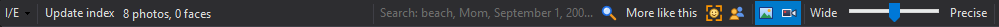
Index photos (у смузі над фото) аналізує папку та її підпапки у фоновому режимі, показує смугу прогресу й оцінку часу, що лишився. Можна далі переглядати фото, зупинити
(кнопка стане Stop indexing) і продовжити пізніше: повторно обробляються лише нові чи змінені фото. Пошук працює, щойно в індекс потрапили перші фото. Вперше програма запитає дозволу,
перш ніж завантажувати моделі ШІ (близько 900 МБ для стандартної моделі пошуку).
Шукайте, описуючи те, що потрібно: children on a stage, snow, a dog, autumn leaves. Впишіть це в поле пошуку і натисніть
Enter або клацніть на лупі. Результати замінюють папку у вікні перегляду: переглядайте, вподобайте і розкладайте їх по групах, як будь-які фото. Esc або
Close results повертає назад. More like this знаходить фото, схожі на показане. Описи пишіть англійською (інша модель, див. Модель нижче, розуміє й інші мови). Фото, яке є в бібліотеці кілька разів, показується один раз.
Дати. Впишіть дату в поле пошуку, окремо або разом з іншими словами: September 1 (цей день у кожному році), September 2009, 2009-09-01,
2009, 2009-2011, beach September 2009, Mom 2005, Mom playing guitar 2005. Назви місяців — англійською. Заголовок вікна каже, як дату було розпізнано.
Обличчя. Ввімкніть значок облич (остання кнопка смуги), щоб побачити обличчя, знайдені на показаному фото. Клацніть на обличчі, щоб сказати, хто це (New person… або вже названа людина),
щоб знайти всі фото цієї людини або видалити хибне обличчя (лялька, плакат). Якщо вписати ім’я людини в поле пошуку, знайдуться її фото. Ім’я можна поєднати зі словами, датою чи іншими іменами, в будь-якому місці тексту:
Yurii playing guitar знаходить фото Yurii, що підходять до слів, Mom and Dad on the beach 2009 — фото, на яких є обоє, зроблені 2009 року, що підходять до слів.
Хто на фото, визначається за обличчями, тож це працює з будь-якою моделлю; слова зіставляє вибрана модель. Текст у подвійних лапках — це лише слова. Жовта пунктирна рамка з іменем і знаком питання — припущення
(looks like Mom): клацніть на ній, щоб підтвердити. Щоб позначити обличчя, яке програма пропустила, утримуйте Shift і обведіть його рамкою.
Імена, які ви даєте в одній папці, відомі й в інших.
Люди й групи. Коли названо багато людей, розкладіть їх по групах (Родина, Друзі, Робота…), щоб їх було легко знайти. Кнопка People (дві голови, поруч зі значком облич) відкриває вікно
People and groups: люди, яких ви назвали, з кількістю названих облич і групами, до яких кожен належить. Виберіть одну людину або кілька (Ctrl+A вибирає всіх;
Shift+клац чи Ctrl+клац вибирає кількох) і праворуч позначте групи, до яких вони належать: наполовину заповнений квадратик означає, що лише частина вибраних людей є в групі, а клац додає
всіх. Людина може бути в кількох групах. New group… створює групу й одразу кладе до неї вибраних людей; Show залишає в списку одну групу або людей, яких немає в жодній;
Rename group… і Delete group стосуються тієї групи, що показана (видалення групи не видаляє її людей). Клац на заголовку стовпчика сортує список: за Faces першими йдуть імена
з найменшою кількістю названих облич. Кожна зміна зберігається одразу.
Rename person… (також F2 у списку й Rename … у меню обличчя) дає вибраній людині інше ім’я всюди: у цій папці, в інших папках (кожна підхоплює його, коли її
відкривають) і в групах. Ім’я, яке вже має інша людина, робить із двох одну людину: вас спершу питають, усі їхні обличчя стають обличчями тієї, що була, з її написанням, а в групах вона
одна. Так можна виправити й ім’я, яке вписали двома способами.
Delete person… (також клавіша Delete у списку) видаляє вибраних людей, одну чи багато, після запитання (за замовчуванням відповідь «Ні»): кожне обличчя з таким іменем втрачає ім’я, у цій папці
та в інших папках (кожна підхоплює це, коли її відкривають), а самі люди зникають з усіх груп (групи лишаються). Зникають лише імена: фото й обличчя, знайдені на них, не чіпаються, а людина повертається, якщо назвати обличчя знову.
Export… і Import… (внизу вікна) переносять людей і групи на інший комп’ютер або в резервну копію через один файл .plpeople.
Export… записує кожну людину з обличчями, які ви назвали (цієї та інших папок), і кожну групу. Import… спершу каже, що є у файлі, а після вашої згоди
додає його: обличчя, яке тут уже назване, зберігає ім’я, група, яка у вас є, отримує людей, яких у ній не було, групу, якої немає, буде створено, і нічого не видаляється — тож повторний імпорт
того самого файлу нічого не змінює. Частина файлу, що походить із цієї самої папки (той самий шлях), стає іменами цієї папки; частини інших папок зберігаються як приклади того, як виглядають ці люди,
а папка, яку ви відкриєте пізніше й яка має власний файл людей, ставить свої імена замість своєї частини, як завжди. Групу з ім’ям людини, яка тут є, і людину з назвою групи, яка тут є, пропускають,
і повідомлення про це каже. Файл, створений іншими моделями облич, ніж у цій версії, дає лише групи.
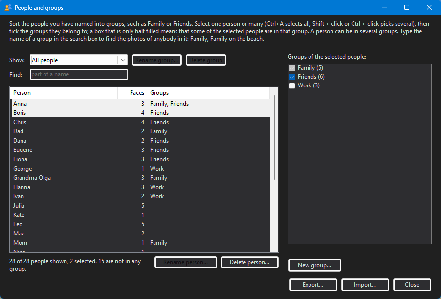
Вибрано двох людей: у групі Friends є обоє, у Family лише один (наполовину заповнений квадратик).
Групи стають у пригоді в трьох місцях. Меню обличчя показує кожну групу за назвою з її людьми в підменю, потім людей, яких немає в жодній групі, а вгорі — людину, на яку схоже обличчя.
New person… питає й про групу: вона починається з тієї, яку ви вибрали востаннє, а нова назва створює нову групу. А назва групи в полі пошуку знаходить фото будь-кого з неї:
Family, Family on the beach 2009, Family and Yurii (Yurii разом із кимось із родини). Група не може мати ім’я людини. Групи однакові в усіх папках, а папка, у якій названо людей, зберігає їхню копію поруч із фото.
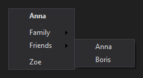
Меню обличчя: вгорі ймовірна людина, групи з їхніми людьми в підменю, потім людина без групи.
Точність. Повзунок праворуч у смузі (від Wide до Precise) задає, наскільки суворий пошук: ліворуч він пропускає більше фото (вільніший збіг),
праворуч менше (точніший збіг), посередині — звичайний режим. Він діє на пошук за описом, на More like this і на пошук фото людини. Коли рухаєте повзунок, останній пошук повторюється
одразу, тож можна розширити пошук, який знайшов замало, або звузити той, що знайшов забагато. Наведіть на повзунок мишу, щоб побачити числа. Кожна папка має своє положення
(SearchPrecision у її файлі photo-liker-config.json).
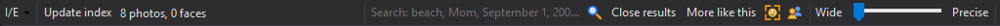
Повзунок на Wide: більше фото, вільніший збіг.
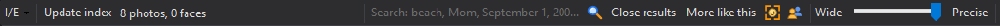
Той самий пошук на Precise: менше фото, точніший збіг.
Модель. Список праворуч у смузі вибирає модель, що зіставляє слова з фото; кожен рядок списку містить назву, виробника в дужках і мови, які модель розуміє. Кожна папка запам’ятовує свій вибір
(SearchModel у її файлі photo-liker-config.json). Числа — з перевірки на 300 фото та їхніх 1 500 описах: як часто потрібне фото було першим серед результатів
і серед перших десяти.
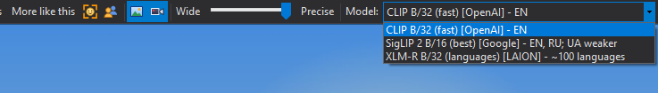
Список моделей.
Модель
Перше
Серед перших 10
Швидкість моделі
Завантаження
Розуміє
CLIP B/32 (OpenAI)
74 %
97 %
21 фото/с
610 МБ
англійську
SigLIP 2 B/16 (Google)
88 %
99,5 %
5 фото/с
1,5 ГБ
англійську й російську добре, українську гірше
XLM-R B/32 (LAION)
78 %
97,5 %
16 фото/с
1,5 ГБ
близько ста мов, зокрема українську й російську
CLIP B/32 — стандартна: найшвидша й найменша для завантаження. SigLIP 2 знаходить потрібне фото найчастіше, але індексує приблизно вчетверо довше. XLM-R така ж швидка, як CLIP,
трохи краща англійською і саме вона підходить для описів українською чи російською. (Швидкість — лише модель фото; справжній запуск залежить ще й від швидкості читання фото.)
Кожна модель має один раз пройти по фото: це робить Update index, і лише це: обличчя, імена людей і дати лишаються, так само як і результати моделей, якими ви користувалися раніше, тож повернення до однієї з них нічого не коштує.
Смуга показує, як далеко це зайшло (3 000 of 12 345 photos for SigLIP 2 B/16); доки не готово, опис і More like this бачать лише готові фото, а дати й люди працюють з усіма.
Поки фото аналізуються, список заблоковано. Коли модель використовується вперше, програма питає дозволу, перш ніж її завантажити.
Корисно знати
Швидкість. На 6-ядерному настільному процесорі індексація обробляє приблизно три фото за секунду (20 000 фото — приблизно дві години). Мережевий диск може бути повільнішим.
Відеокарта не потрібна.
Дати фото. Дата береться з камери (EXIF). Якщо її немає або їй не можна вірити (раніше 1900 року, у майбутньому, або камера втратила годинник), використовується дата створення файлу,
а рядок стану повідомляє, скільки результатів датовано так.
Інший комп’ютер. Скористайтеся I/E > Export index… (перша кнопка смуги), щоб зберегти індекс у файл, і I/E > Import index… на іншому комп’ютері. Якщо відео вже проаналізовано, той самий файл несе й їх (моменти, обличчя і прочитане мовлення), а імпорт замінює
відео, проаналізовані для цієї папки; файл, зроблений без відео, залишає їх як є. Індекс великої бібліотеки займає сотні мегабайтів: смуга поруч із кнопкою I/E показує, скільки експорту чи імпорту вже зроблено (відсотки — у рядку стану, а кнопка програми на панелі завдань заповнюється разом з нею). Потім натисніть Оновити індекс: програма запропонує завантажити там модель пошуку (навіть якщо всі фото вже є в імпортованому індексі), бо пошук за описом потребує її.
Visual C++ runtime. Моделям ШІ потрібен актуальний Microsoft Visual C++ runtime. Він надходить з оновленнями Windows; якщо завантаження моделей зупиняється з повідомленням про це,
встановіть Visual C++ Redistributable (x64).
3. Перші кроки
Відкрийте папку з фото. Показується перше фото, а праворуч — стрічка маленьких картинок (мініатюр).
Натисніть → (стрілка вправо), щоб побачити наступне фото.
Натисніть Пробіл, щоб вподобати фото. Його буде скопійовано в папку Liked, а на фото з’явиться зелена позначка.
Натисніть Пробіл ще раз — копію буде видалено.
Натисніть ← (стрілка вліво), щоб повернутися назад.
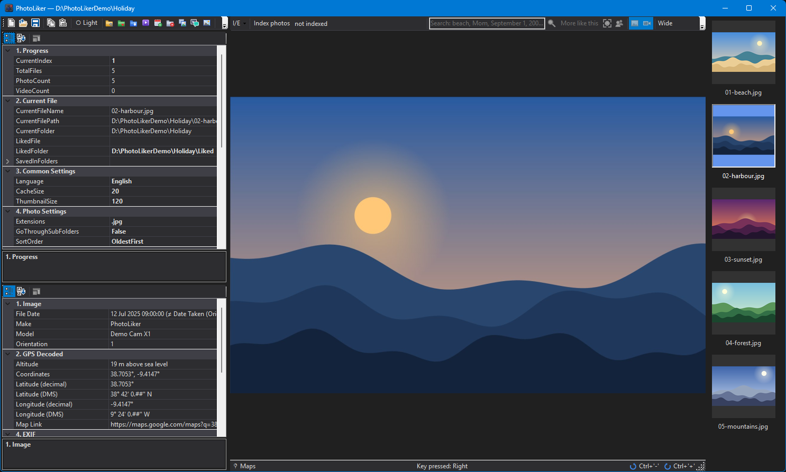
→: наступне фото.
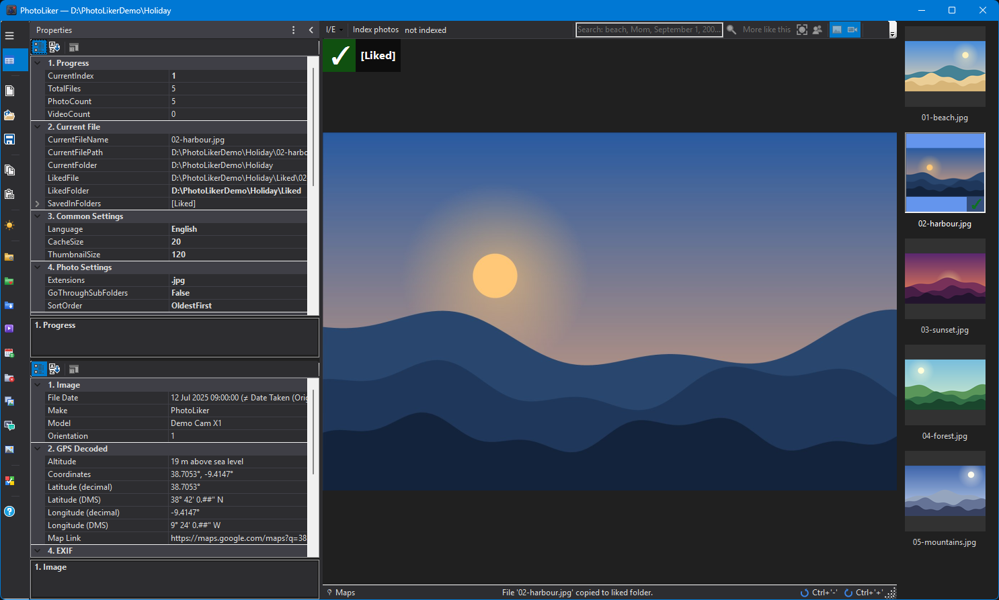
Пробіл: фото вподобано. Воно отримує зелену позначку — у вікні перегляду і на мініатюрі.
Клавіші працюють лише на фото. Коли ви вводите текст у полі (поле пошуку або значення в таблиці налаштувань), клавіші належать цьому полю.
Клацніть на фото, на мініатюрі або на порожньому місці навколо фото — і клавіші знову керують фото.
4. Вікно програми
Панель інструментів (стовпчик значків біля лівого краю): кнопки з розділу Панель інструментів.
Панель властивостей (ліворуч від фото, поки ви її не перенесли): дві таблиці нижче із заголовком. Її можна закріпити біля іншого краю,
винести в окреме вікно або згорнути, див. Панель інструментів.
Таблиця налаштувань (верхня): де ви зараз (CurrentIndex, TotalFiles), поточний файл і налаштування папки.
Виберіть рядок — і в панелі під таблицею з’явиться його опис.
Дані про фото (нижня): те, що камера записала у фото, див. EXIF і GPS.
Смуга пошуку (над фото): індексація і пошук, див. Пошук фото.
Фото (посередині). Зелена позначка в лівому верхньому куті означає, що фото вподобано або додано до групи; поруч із нею перелічено папки,
де воно збережено. У лівому нижньому куті — перелік ваших груп.
Мініатюри (праворуч). Клацніть на одну, щоб перейти до цього фото.
Рядок стану (внизу): що програма щойно зробила. Праворуч у ньому є посилання Maps (якщо у фото є місце зйомки)
і кнопка Rotate.
Кнопка на панелі завдань: поки щось триває довго (індексація фото, діалоги дат, дублікатів, порожніх папок і відео, збереження
результатів пошуку в групі, завантаження нової версії), під значком PhotoLiker заповнюється зелена смужка — так, як коли браузер завантажує файл, —
тож за процесом можна стежити, навіть коли вікно згорнуто. Смужка, що бігає туди й сюди, означає, що кінець поки невідомий.
5. Клавіатура і миша
Дія
Що відбувається
→ / ←
Наступне / попереднє фото. Клацання на мініатюрі переходить до неї.
Home / End
Перше / останнє фото списку (або результатів пошуку, поки їх показано).
PageDown / PageUp
Перше фото наступного / попереднього місяця. Рядок стану називає місяць.
Пробіл
Вподобати фото (скопіювати в папку Liked) або знову прибрати копію.
Delete
Перемістити фото в папку Deleted і показати наступне (див. Видалення фото).
1–9, A–Z
Зберегти фото в групі або знову прибрати з неї (див. Вподобання і групи).
Alt+1–9, Alt+A–Z
Поки показано результати пошуку: зберегти усі їх у групі — після того, як програма скаже, скільки це фото, і запитає підтвердження.
0
Вмістити фото у вікно перегляду (після збільшення).
Alt+Enter
Показати фото зі списку як показ слайдів на весь екран, починаючи з показаного фото. У ньому → / ← показують сусіднє з показаного фото й ставлять показ на паузу (як і будь-яка інша клавіша, крім Esc; Пробіл продовжує його), а клавіші, що міняють вигляд показу, його не зупиняють: F / N вмикають і вимикають обличчя / імена людей, ↓ / ↑ обирають наступний / попередній ефект, L вигляд, B картку, 1234M колаж; а Esc (або знову Alt+Enter) повертає до вікна.
Скопіювати фото в буфер обміну як файл і як картинку: вставте його в Провідник або месенджер.
Ctrl++ / Ctrl+-
Повернути фото на чверть оберту за / проти годинникової стрілки й зберегти (див. Поворот фото).
Ctrl+D
Змінити дату показаного файлу в невеликому вікні: Date Taken (Original) фото JPEG (дати його файлу змінюються разом із нею) або Recorded відео (дата записується у відео, дати його файлу змінюються разом із нею). Це те саме вікно й те саме збереження, що й ... цього рядка в таблиці метаданих. Файл іншого типу не має дати, яку тут можна змінити, і рядок стану про це повідомить. Не в показі слайдів.
Ctrl+Shift+D
Відкрити вікно Draw («Малювати») для показаного фото: малювати на ньому, писати текст, обрізати, розпізнати текст на ньому. На відео малювати не можна. Не в показі слайдів.
Ctrl+Shift+M
Відкрити вікно Scan manuscripts («Розпізнавання рукописів») з показаним фото як першою сторінкою: читати рукописні чи друковані сторінки в текст поруч із фото, виправляти його, повертати фото, зберегти текст як PDF, EPUB або документ Word. Не в показі слайдів.
Ctrl+колесо миші
Над фото: збільшення, далі перетягуйте картинку. Над мініатюрами: зміна їхнього розміру.
Enter
На відео: відтворити його або поставити на паузу / відновити (див. Відео в теці). Клацання по постеру запускає відео, клацання по картинці під час відтворення ставить на паузу.
Shift+→ / ←, Ctrl+→ / ←
Під час відтворення відео: на 5 секунд / на 30 секунд уперед або назад.
Ctrl+↑ / ↓
Під час відтворення відео: гучніше / тихіше.
. / ,
На відео: наступне / попереднє місце, знайдене в ньому пошуком (без пошуку — наступний / попередній момент), і відтворення звідти.
Ctrl+S
На відео: зберегти кадр, який воно показує, як фото в теці Liked, з датою, коли його там записано.
Миша над 3D-моделлю
Ліва кнопка: повернути. Права або середня кнопка: пересунути. Колесо: масштаб. Подвійне клацання: почати спочатку (див. 3D-моделі).
Esc
Закрити результати пошуку; у показі слайдів — повернутися.
Enter у полі пошуку
Шукати.
Shift+перетягування над фото
Позначити обличчя, яке програма пропустила (коли ввімкнено значок облич).
Такий самий перелік є у вікні About (кнопка Help).
6. Панель інструментів
Панель інструментів — стовпчик значків біля лівого краю вікна. Три смужки угорі показують назви кнопок поруч зі значками й знову ховають їх;
вибір запам’ятовується до наступного запуску. Якщо вікно замале для всіх кнопок, останні ховаються за стрілкою внизу стовпчика.
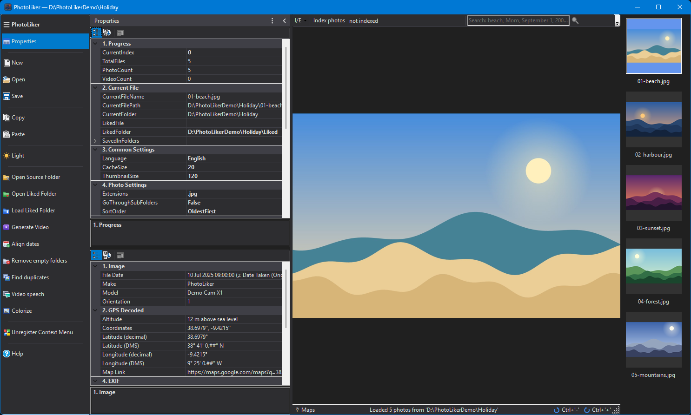
Панель інструментів із назвами кнопок (три смужки вгорі) і панель властивостей поруч.
Три смужки (угорі): показати або сховати назви кнопок.
Властивості (маленьке вікно із заголовком): згорнути панель з двома таблицями у вузьку вкладку біля краю й повернути її. Поки панель видно, кнопка підсвічена.
Open: вибрати папку з фото. Клацніть її правою кнопкою — і побачите десять папок, які ви відкривали останніми (відкрита зараз позначена галочкою); клацніть папку, щоб відкрити її, або виберіть «Очистити список». Ті самі папки є в списку «Нещодавні папки» на кнопці панелі завдань: клацніть правою кнопкою значок PhotoLiker на панелі завдань (він є там і тоді, коли значок закріплений, а програма не запущена) і виберіть папку — PhotoLiker запуститься на ній в новому вікні. Windows дає закріпити папку в цьому списку, щоб вона там лишалася, а «Видалити з цього списку» прибирає її і зі списку програми.
Save (дискета): Зберегти як. Питає куди й зберігає копію показаного фото чи відео під назвою й у місці, які ви оберете (з датами файлу). Фото можна зберегти в іншому форматі: оберіть тип у списку Тип файлу (JPEG, PNG, BMP, GIF або TIFF) або впишіть розширення — і фото буде перетворено (цілим, у прямому положенні, з датами файлу, а також датою зйомки, камерою та іншими нотатками Exif там, де формат має для них місце). Той самий формат — це копія файлу. Відео копіюється як є. Коли панель розфарбування показує кольори або працює панель перефокусування, зберігається картинка такою, як вона на екрані, у форматі JPEG, якщо ви не оберете інший тип. Показане фото ніколи не змінюється.
Copy: скопіювати показане фото в буфер обміну (те саме, що Ctrl+C).
Open Source Folder і Open Liked Folder: показати в Провіднику папку з фото або папку Liked.
Load Liked Folder: відкрити папку Liked як окрему папку з фото, щоб подивитися на вибране.
Generate Video: створити відео з фото, див. Створення відео.
Align dates, Remove empty folders, Find duplicates: див. Наведення ладу.
Video speech (кадр відео з хмаринкою мовлення; є, поки ввімкнено SupportVideo): таблиця того, що кажуть у відео теки, див. Таблиця мовлення.
Colorize (фото, сіре в одному куті й кольорове в іншому): додає кольори чорно-білим фото, див. Розфарбування.
Refocus (фото з різким кільцем і м’якими вогнями): знімає показане фото в портретному режимі плаваючою панеллю, див. Перефокусування фото.
Register Context Menu / Unregister Context Menu: додати або прибрати пункт Open in Photo Liker у контекстному меню папок.
STL files (синій куб із зеленою галочкою; поруч із Register Context Menu): додати PhotoLiker до списку програм, які Windows пропонує для файлів .stl, і відкрити «Програми за замовчуванням» Windows, де його обирають, див. 3D-моделі.
Help (знак питання): вікно About з клавішами і цим посібником.
Make a book (бірюзова книга з фото на обкладинці): створити книгу у форматі PDF, EPUB або Word (DOCX) із фото, з текстом над кожним і під ним, див. Створення книги.
Trace bitmap («Векторизація зображення»; помаранчева плитка з кривою і двома вузлами, після Make a book): перетворити показане фото на векторне креслення, файл SVG або DXF у розмірі в міліметрах, див. Векторизація фото.
Video to GIF («Відео в GIF»; фіолетова плитка з трикутником «грати» і круглою стрілкою, після Trace bitmap): зробити анімований GIF із частини відео, щоб вставити його в README, чат чи сторінку, див. GIF з відео.
Telegram sticker («Стікер для Telegram»; синє обличчя на білому стікері із загнутим кутиком, після Video to GIF): вирізати об’єкт зі показаного фото й зберегти як стікер для Telegram — WebP або PNG у 512 пікселів із прозорим тлом, див. Стікер для Telegram.
Draw («Малювати»; олівець, який щойно намалював червону криву, після Telegram sticker): малювати на показаному фото, писати на ньому текст, обрізати його і розпізнати текст на ньому, див. Малювання на фото і розпізнавання тексту. Те саме робить Ctrl+Shift+D.
Scan manuscripts («Розпізнавання рукописів»; аркуш паперу з рядками синього рукопису й зеленою галочкою, найостанніша кнопка): прочитати рукописні чи друковані сторінки в текст, який можна виправляти поруч із фото, і зберегти його як PDF, EPUB або документ Word, див. Розпізнавання рукописних і друкованих сторінок. Ctrl+Shift+M робить те саме.
Панель властивостей
Дві таблиці (налаштування вгорі, властивості фото внизу) містяться в одній панелі, і її можна розташувати, як вам зручно:
Меню ⋮ у заголовку закріплює її біля лівого (так вона починає), правого або нижнього краю вікна
(внизу дві таблиці стоять поруч). Потягніть вузьку смужку між панеллю й фото, щоб зробити панель ширшою чи вищою.
Окреме вікно виносить її з вікна програми — її можна покласти будь-куди, навіть на інший екран. Кнопка закриття цього вікна або подвійне клацання по смужці
під його заголовком повертає панель туди, звідки вона прийшла. Подвійне клацання по заголовку закріпленої панелі виносить її в окреме вікно.
Кнопка ‹ у заголовку (або Згорнути до краю в меню) згортає панель у вузьку вкладку з її назвою, і фото отримує місце.
Клацніть вкладку або кнопку Властивості на панелі інструментів, щоб відкрити її знову.
Поки панель згорнута, таблиці з датою немає, тому дату зйомки фото (для відео — коли його записано, над його тривалістю) написано в правому нижньому куті фото,
білим на темній смужці, як у показі слайдів. Коли панель повертається, дата зникає. Поверх відео, що відтворюється, її не пишуть.
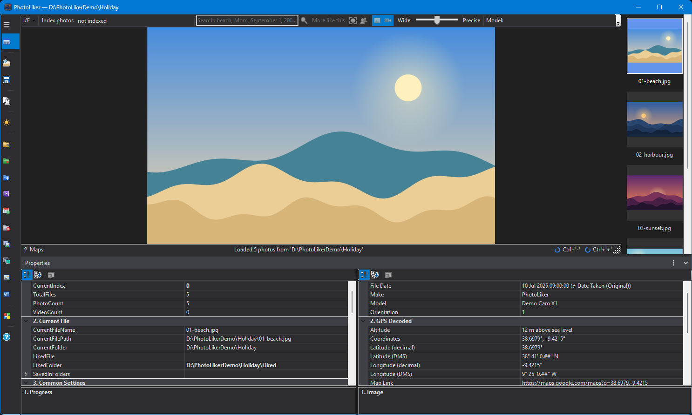
Панель, закріплена внизу: дві таблиці стоять поруч, а панель інструментів зберігає всю висоту.
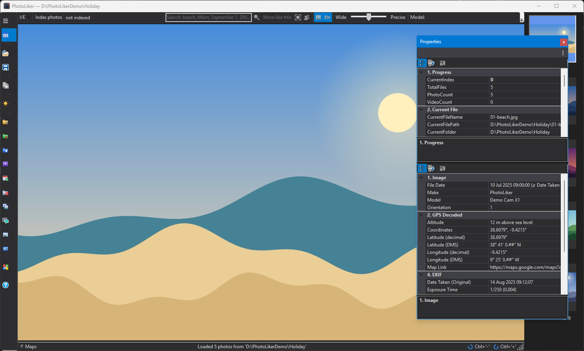
Панель в окремому вікні (тут поверх фото; її можна покласти будь-куди, навіть на інший екран).
Де стоїть панель, який у неї розмір і чи вона згорнута — запам’ятовується разом з назвами кнопок панелі інструментів.
7. Вподобання і групи
Окрім вподобання, фото можна розкладати по групах: родина, подорожі, фото для друку — як вам зручно. Натисніть клавішу
1–9 або A–Z (без Ctrl, Alt і Shift) — і копію фото буде збережено в папці
A - Group, 3 - Group тощо всередині папки Liked. Папка створюється, коли вона вперше потрібна. Натисніть ту саму клавішу ще раз — і копію буде прибрано.
Вподобання пробілом окреме: фото може бути вподобаним і водночас у скількох завгодно групах.
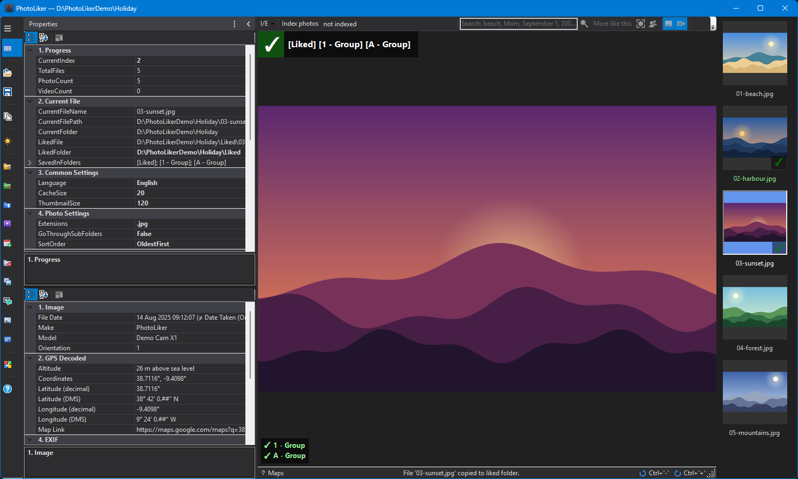
Фото, яке вподобано і яке є в групах 1 та A. Папки перелічено поруч із зеленою позначкою, а легенда в лівому нижньому куті
показує, яка клавіша куди зберігає.
Назвіть свої групи. Перейменуйте папку групи в Провіднику, якщо нова назва й далі починається з тієї самої клавіші та - Group:
A - Group Family відтоді використовується для A. Легенда показує ці назви.
Де збережено це фото? Рядок SavedInFolders таблиці налаштувань перелічує всі папки, де є копія показаного фото.
Усі результати пошуку одразу. Поки показано результати, Alt+A (або будь-яка клавіша групи) зберігає кожне з них у групі.
Нічого не копіюється, доки ви не погодитеся: вікно повідомляє, скільки це фото і скільки МБ. Копіювання показує смуга прогресу, а Cancel його зупиняє.
Якщо в групи ще немає папки, її буде названо за пошуком, наприклад A - Group children on a stage. Так лише додаються копії, жодну не видаляють.
Назви копій. У назві копії є короткий код, IMG_0001 [3f9a1c2e].jpg, щоб фото з різних папок, які мають однакові імена файлів
(кожна камера має власний IMG_0001.jpg), ніколи не перезаписували копії одне одного.
0 — не група: ця клавіша вміщує фото у вікно перегляду.
8. Видалення фото
Delete переміщує показане фото в папку Deleted всередині папки з фото і показує наступне.
Нічого не стирається. Фото зберігає своє місце всередині папки (314CANON\IMG_0001.jpg потрапляє в
Deleted\314CANON\IMG_0001.jpg). Щоб повернути фото, перемістіть його з Deleted у Провіднику; наступного разу, коли папку буде переглянуто,
воно знову буде в списку. Щоб побачити, що там лежить, відкрийте папку Deleted кнопкою відкриття папки.
Папку Deleted пропускають під час складання списку фото, а індекс пошуку її не переглядає. Копії фото в папках Liked і груп залишаються на місці. Видалене відео також зникає з каталогу відео разом із його моментами та мовленням.
9. Поворот фото
Дві кнопки Rotate у правому куті рядка стану повертають показане фото на чверть оберту проти (перша) або за (остання) годинникової стрілки і зберігають це у файлі;
те саме роблять Ctrl+- і Ctrl++ (на кожній кнопці написано її клавіші, а якщо навести вказівник — з'явиться підказка). Натисніть знову — і буде ще чверть. Вона працює з файлами JPEG (.jpg, .jpeg); для файлів іншого типу рядок стану повідомить про це,
і нічого не буде записано.
Нічого не втрачається. Картинка не декодується і не записується заново; змінюється лише примітка у файлі, яка підказує
кожній програмі перегляду (цій програмі, Windows, телефонам, браузерам), як повернути картинку. Повертати можна скільки завгодно разів.
Date Taken (Original) фото і дати його файлу (створення і зміни) стають одним моментом: датою зйомки, яку камера записала у фото, як і в Align dates;
фото без правдоподібної дати отримує дату свого файлу, записану в нього як дата зйомки. Рядок стану повідомить, якщо диск не зберіг дату.
Копії фото в папках Liked і груп не повертаються: це фото у тому вигляді, в якому воно було, коли ви його вподобали. Вони
отримують нові дати фото, тож і далі показуються як його копії.
10. Показ слайдів
Натисніть Alt+Enter — і фото зі списку підуть одне за одним на весь екран або на всі монітори, на кожному своє (див. Monitors
нижче), починаючи з того, на яке ви дивитеся (поки показано результати пошуку, списком є результати). Кожне фото займає стільки місця, скільки дозволяє екран, навколо — чорне поле.
Esc (або знову Alt+Enter) повертає до вікна, до того фото, на якому показ зупинився.
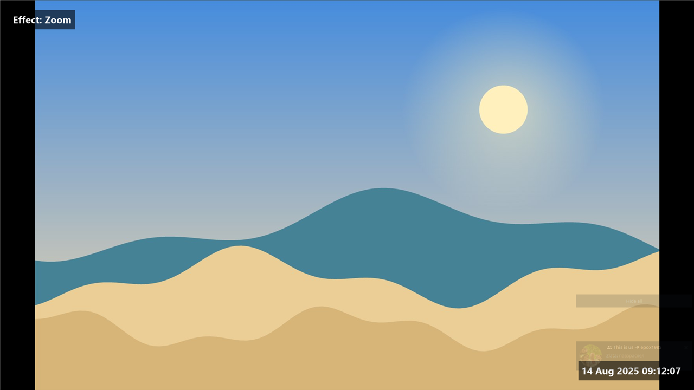
Показ слайдів: фото займає стільки місця, скільки дозволяє екран, у правому нижньому куті — дата зйомки, а в лівому верхньому на мить з’являється назва ефекту, який щойно обрала ↓.
Будь-яка інша клавіша ставить показ на паузу, а Пробіл продовжує його. Поки він на паузі, нічого не змінюється саме (відео, що грає, зупиняється), а
у верхньому правому куті написано Пауза (Пробіл — продовжити). → / ← усе ще показують наступне / попереднє фото, і показ лишається на паузі.
Самі лише Shift, Ctrl і Alt паузи не вмикають. Клавіші, що лише міняють вигляд показу, його теж не зупиняють: ↓ / ↑ (ефект),
F / N (обличчя й імена), C (субтитри), L (вигляд), B (рамка) і 1234M (колаж:
немає, два, три, чотири фото або змішаний; клавіша ввімкненого колажу його прибирає): показ, що йде, продовжує йти, а той, що був на паузі, лишається на паузі.
Медіаклавіші та пульти дистанційного керування. На клавіатурі з медіаклавішами або на пульті, як-от від Windows Media Center, Play продовжує показ, що стоїть на паузі
(показ, що йде, лишається як є), Pause ставить його на паузу, а єдина кнопка Play/Pause робить те саме, що й Пробіл. Гучність +, Гучність −
та Вимкнення звуку показ на паузу не ставлять: їх залишено Windows, тож звук змінюється, а фото йдуть далі.
Комп'ютер не засинає. Поки йде показ (на паузі чи ні), не запускається заставка, дисплей не вимикається і комп'ютер не переходить у режим сну
через те, що ніхто не торкався клавіатури. Коли показ завершується, Windows усе це отримує назад.
Індексація за показом. Якщо папка індексується, поки йде показ, невелика смужка вгорі посередині кожного монітора показує, як далеко вона
(Індексація: 1 234 / 16 000 (7%), залишилось 5 хв, із зеленою лінією, що заповнюється). Коли індексація завершується, смужка зникає, а у верхньому лівому куті на мить з'являється Індексацію завершено.
F вмикає й вимикає обличчя людей (квадрат з іменем на кожному відомому обличчі), а N — їхні імена (один рядок у лівому нижньому куті).
Це два окремі перемикачі. Кожне натискання пише Обличчя: увімкнено, Імена: вимкнено тощо у верхньому лівому куті, а показ ставиться на паузу, як і від будь-якої іншої клавіші. Для цього
папка має бути проіндексована для пошуку, а люди — названі. Як вони були залишені, коли показ закінчився, так їх потім показують рядки PeopleFaces і PeopleNames.
C вмикає й вимикає субтитри відео (рядок ShowCaptions): відео, що грає, одразу отримує або втрачає субтитри. Кожне натискання пише Субтитри: увімкнено або
Субтитри: вимкнено у верхньому лівому куті, а показ ставиться на паузу, як і від будь-якої іншої клавіші. Якщо у показі немає відео, клавіша каже, що субтитрувати нічого. Як клавіша залишила субтитри, коли показ закінчився, так їх потім показує рядок.
→ / ← показують фото, сусіднє з тим, що на екрані, також у випадковому режимі (там навмання вибирає
лише таймер), і це фото знову отримує весь свій час. Після останнього фото йде перше, а перед першим — останнє.
Утримуйте клавішу, щоб гортати швидко. Фото навколо того, що на екрані, готуються заздалегідь, у розмірі вашого екрана,
а у випадковому режимі — ще й наступні, які вибере таймер, тож показ встигає за клавіатурою.
↓ / ↑ обирають наступний / попередній ефект, поки триває показ (у порядку випадного списку рядка Effect, по колу). Його назву
написано в лівому верхньому куті приблизно дві секунди, і наступна зміна фото відбувається за ним. Ефект, на якому ви зупинилися, стає налаштуванням.
Фото, яке не вдається прочитати, пропускається.
Одинадцять налаштувань — у групі 6. Slideshow таблиці налаштувань, і вони зберігаються для папки:
Налаштування
Значення
Mode
Random (за замовчуванням): після часу одного фото — інше фото зі списку, кожне по разу, перш ніж якесь повернеться. OneByOne: наступне фото списку.
Monitors
Current (за замовчуванням): екран, на якому PhotoLiker. All: усі підключені монітори, кожен зі своїм фото, ніколи те саме фото на двох моніторах, і всі вони змінюються разом. У режимі Random кожен монітор бере наступне фото випадкового порядку; в OneByOne монітори зліва направо показують фото, що йдуть одне за одним (фото, на яке ви дивилися, лишається на моніторі вікна), і наступний набір починається там, де закінчився цей. → / ← переводять кожен монітор до сусіднього фото. Якщо моніторів більше, ніж фото, найвіддаленіші від вікна не використовуються.
Timeout
Скільки секунд фото лишається на екрані: за замовчуванням 2, не менше 0,2. Час відлічується від появи фото на екрані.
Watermark
Що написано в правому нижньому куті: DateTime (за замовчуванням) — день і час зйомки фото, Year — рік, або None. Це дата, яку камера записала у фото, якщо їй можна вірити, інакше — дата файлу. Фото без дати лишається без напису.
PeopleFaces
False (за замовчуванням): без квадратів. True: квадрат навколо обличчя кожної відомої людини з іменем над ним, як вікно показує обличчя: зелений для обличчя, яке ви назвали самі, золотий пунктирний для обличчя, що лише схоже на цю людину (напис такий самий, без знака ?). Обличчя, яких ніхто не знає, квадрата не мають. Береться з облич, які знайшов пошук, тож папка має бути проіндексована, а люди — названі (кнопка «Обличчя»). Клавіша F вмикає й вимикає його під час показу. Квадрати рухаються разом з фото в усіх ефектах і майже нічого не коштують.
PeopleNames
False (за замовчуванням): без імен. True: імена людей одним рядком у лівому нижньому куті, зліва направо, як вони стоять (Анна, Олег, Мама). Клавіша N вмикає й вимикає його під час показу. Від PeopleFaces не залежить.
Effect
Як одне фото займає місце попереднього. Fade (за замовчуванням): старе фото розчиняється в новому. Slide: нове фото виштовхує старе вліво. Zoom: нове фото виростає з меншого розміру, проявляючись. KenBurns: кожне фото повільно зсувається й наближається (або віддаляється) весь час, поки воно на екрані, і розчиняється в наступному. Parallax: кожне фото — маленька сцена з глибиною, і поки воно показане, «камера» зсувається вбік, тож близькі частини рухаються відносно далеких, див. Паралакс за глибиною. Tilt: як KenBurns, і фото ще й повільно повертається на градус-два. DollyZoom: «ефект запаморочення»: далекі частини фото збільшуються, а близькі зменшуються (або навпаки) відносно його середини (потрібна модель глибини, як для Parallax). Нові зміни фото: PushUp, PushDown (нове фото виштовхує старе вгору чи вниз), CrossZoom, Wipe, Iris, Pixelate, Ripple, Cube, BlurDissolve, DipToBlack, DipToWhite. Random: одне з усіх ефектів, яким не потрібна модель (крім Parallax, Portrait і DollyZoom), той самий для стількох фото, скільки каже рядок EffectRun (за замовчуванням 5), потім інший, ніколи двічі поспіль той самий; він лише вибирає ефект: вигляд, рамка й колаж такі, як налаштовано, також коли вони None. None: наступне фото з’являється одразу. Зміна триває не довше 0,8 секунди і не більше 40% від Timeout. → / ← ставлять наступне фото одразу, без зміни (з KenBurns, Tilt, Parallax і DollyZoom воно все одно рухається).
EffectRun
Скільки фото тримається випадковий ефект, коли Effect дорівнює Random: той самий ефект для стількох фото поспіль, потім інший. Число від 1 до 100 (5 за замовчуванням) або одне з Random, Random 1-10 і Random 3-20 — тоді випадково визначається, скільки фото тримається кожен ефект: Random — від 1 до 100 (короткі проміжки ймовірніші за довгі), два інші — від 1 до 10 або від 3 до 20 (кожне число діапазону однаково ймовірне). 1 обирає новий ефект для кожної зміни. Для будь-якого іншого ефекту рядок нічого не робить; читається, коли починається показ.
Look
Як обробляються кольори фото: None (за замовчуванням), Vintage, Film, Sepia, BlackAndWhite, Cinema, Vignette (темні кути), Grain (зерно), OldPhoto (коричневе, вицвіле, з подряпинами), Season (за датою зйомки: взимку холодне, навесні свіже, влітку тепле, восени золоте), Lut (таблиця з рядка LookFile) або Random (кожне фото має свій вигляд, випадково). Фото на диску не змінюються. Клавіша L вибирає наступний вигляд під час показу.
LookFile
Таблиця кольорів у форматі .cube (3D LUT, які пишуть програми для обробки кольору), що використовується, коли Look дорівнює Lut. Кнопка ... відкриває вікно вибору файлу в теці Luts поруч із програмою, де лежать дванадцять виглядів (бірюзовий і помаранчевий, теплий вінтаж, матовий, м’який портрет, холодна зелена плівка, обхід відбілювання, крос-процес, золота година, холодна ніч, яскравий і два чорно-білі). Якщо файл не можна використати, рядок стану каже чому, і показ іде без нього.
Border
None (за замовчуванням), Polaroid: кожне фото на білій картці, як моментальний знімок, з датою зйомки, написаною в полі від руки; Frame: золота картинна рама з кремовим паспарту; Film: відрізок 35-міліметрової плівки з перфорацією й датою, відбитою помаранчевим у куті фото; Stamp: поштова марка з перфорованим краєм і датою великими літерами внизу; Glow: неонова лінія навколо фото, що сяє кольором, якого на фото найбільше; Shadow: фото із заокругленими кутами на папері з м’якою тінню; або Random: частина фото (приблизно кожне третє) в одній із цих рамок, випадково. Клавіша B вибирає наступну рамку під час показу.
Collage
None (за замовчуванням): по одному фото. Two, Three (одне велике й два менші), Four: стільки фото однієї події на екрані одночасно; Mixed: по черзі три, два й чотири; Random: від одного до чотирьох фото, випадково. Фото, що йдуть підряд у списку й зняті з різницею не більше шести годин, складають сторінку. Клавіші 234M і R вибирають його під час показу, не зупиняючи його (1 прибирає).
UseVideo
False (за замовчуванням): лише фото. True: відео зі списку теж відтворюються, між фото (відео є в списку, поки ввімкнено SupportVideo).
MuteVideo
True: відео відтворюються без звуку.
VideoPart
OnlyFoundTimeFrames (за замовчуванням): лише місця, які знайшов у відео пошук, по 6 секунд навколо кожного (2 до і 4 після); відео папки, де нічого не шукали, відтворюється повністю. FullVideo: усе відео.
LowerOtherAudio
Поки відео відтворюється зі звуком, звук інших програм притишується на стільки відсотків і повертається після: за замовчуванням 50, 0 лишає його як є, 100 вимикає. Не діє з MuteVideo.
ShowCaptions
True: те, що сказано у відео (мовлення, яке прочитав індекс, див. VideoSpeech), пишеться поверх картинки субтитрами, поки воно грає, також з MuteVideo. False (за замовчуванням). Відео, мовлення якого не прочитано, субтитрів не має. Клавіша C вмикає й вимикає його під час показу.
Gpu
True (за замовчуванням): графічний чип малює ефекти, важкі для процесора (зміни Ripple, Cube і BlurDissolve, поворот Tilt, глибину Parallax і DollyZoom) — на екрані 4K це чверть часу. Легкі ефекти завжди малює процесор, так само як і все на комп’ютері без придатного графічного чипа чи коли чип збоїть. False: усе робить процесор.
Паралакс за глибиною
Коли Effect дорівнює Parallax, кожне фото рухається так, ніби камера йде вбік уздовж нього: близькі частини фото (обличчя, квітка) рухаються відносно далеких
(пагорби, стіна), ніби це справжній простір. Модель, що працює на вашому комп’ютері, визначає, наскільки близько кожна частина. Коли вона вперше потрібна, PhotoLiker питає, чи завантажити її
(99 МБ, один раз); поки її немає, фото рухаються звичайно (як у KenBurns), а клавіші ↓ / ↑ цей ефект пропускають. Для кожного фото це близько півсекунди
роботи, яку зроблено наперед, тож показ не чекає. Random його не вибирає. Список Effect у розділі Створення відео пропонує його (і кожен інший ефект показу слайдів) для відео.
З KenBurns (а також Tilt, Parallax, DollyZoom і Portrait) зсув тримає в кадрі обличчя, які знайшов пошук: фото наближається до точки на обличчях і не більше, ніж вони дозволяють,
тож ніколи не розрізає голову. Фото без відомих облич зсувається навмання, як і раніше.
Ефект Portrait
Модель глибини дозволяє також перефокусувати фото вже після зйомки, як це робить телефон у портретному режимі: те, що на глибині фокуса, лишається різким, а ближче чи далі — розмивається.
З Effect = Portrait кожне фото показу слайдів знімається так, з фокусом на найбільшому обличчі (а якщо облич немає — на середині фото). Потрібна та сама модель глибини, що й для
Parallax, і Random його теж не вибирає. Щоб перефокусувати фото самому й зберегти копію, див. Перефокусування фото.
Вигляд, картка й колаж
Look змінює кольори фото (старий відбиток, плівка, сепія, чорно-біле, «кіно» або ваша власна таблиця .cube), Border вставляє кожне фото в рамку: картку Polaroid з датою, написаною від руки, картинну раму Frame, відрізок 35-міліметрової плівки Film з датою, відбитою помаранчевим, поштову марку Stamp, неонове сяйво Glow кольору фото або тінь на папері Shadow;
а Collage показує одночасно від двох до чотирьох фото однієї події. Клавіші L і B змінюють вигляд і рамку,
поки йде показ. З колажем обличчя й імена (F, N) не показуються. Кожне з трьох має значення Random, що віддає його на волю випадку для кожного фото (ефект Random цього не робить: він лише вибирає ефект).
Відео в показі слайдів
Коли ввімкнено UseVideo, відео зі списку (папки або результатів пошуку) беруть участь у показі. Фото йдуть як раніше, а відео відтворюється між ними, і лише на екрані,
де відкрито PhotoLiker: з кількома моніторами решта показує фото, поки відео грає. По черзі відео грає там, де лежить у списку; випадково відео трапляються так часто, як їх серед елементів. З OnlyFoundTimeFrames
і показаними результатами пошуку відтворюються лише знайдені місця (2 секунди до і 4 після кожного). Right і Left пропускають відео. Поки відео грає зі звуком, звук інших програм притишується
на LowerOtherAudio відсотків і повертається після. З увімкненим ShowCaptions слова з відео пишуться внизу екрана, поки їх вимовляють (білим на чорному, до чотирьох рядків).
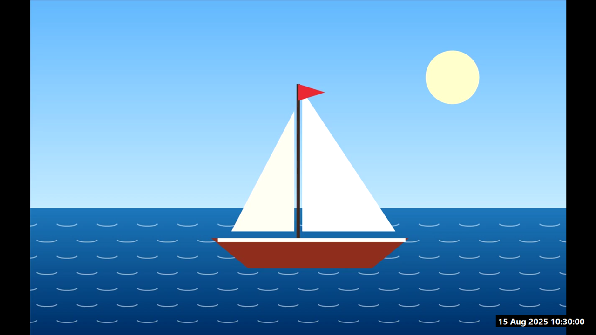
Відео в показі слайдів: воно грає на весь екран, а дата його запису стоїть у кутку, як дата фото.
11. Налаштування
Таблиця налаштувань угорі ліворуч показує прогрес, поточний файл і налаштування папки. Кожен рядок має опис: виберіть його — і панель під таблицею
пояснить, для чого він.
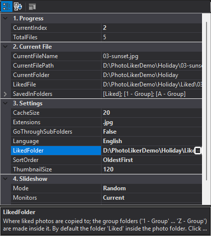
Таблиця налаштувань, вибрано рядок LikedFolder.
Рядки поділено на шість груп: 1. Progress, 2. Current File, 3. Common Settings, 4. Photo Settings, 5. Video Settings і 6. Slideshow.
2. Current File (показане фото; усі рядки лише для читання, крім одного):
Налаштування
Значення
LikedFolder
Куди копіюються вподобані фото. За замовчуванням — папка Liked всередині папки з фото. Кнопка … відкриває вибір папки.
3. Common Settings (уся програма, і фото, і відео):
Налаштування
Значення
Language
Мова програми: English або Українська. Див. Мова програми.
CacheSize
Скільки фото з кожного боку від показаного тримається готовими в пам’яті, щоб стрілки спрацьовували миттєво.
ThumbnailSize
Розмір мініатюр у пікселях. Його змінює Ctrl+колесо миші над мініатюрами.
4. Photo Settings (які файли показуються і в якому порядку):
Налаштування
Значення
GoThroughSubFolders
Показувати також фото з підпапок (за замовчуванням увімкнено). Сама папка Liked пропускається.
Extensions
Типи файлів, які вважаються фото, через ; або ,, кожен із крапкою: .jpg; .png.
Показувати 3D-моделі (файли STL) теки в списку разом із фото (за замовчуванням увімкнено). Див. 3D-моделі.
ModelExtensions
Типи файлів, які вважаються 3D-моделями, коли SupportModels увімкнено: .stl (читаються лише файли STL).
5. Video Settings:
Налаштування
Значення
SupportVideo
Показувати відео теки в списку разом із фото (за замовчуванням увімкнено). Див. Відео в теці.
VideoExtensions
Типи файлів, які вважаються відео, коли SupportVideo увімкнено: .mp4; .mov; .avi; .mkv ... (звичайні вже в списку).
VideoSpeech
Перетворювати на текст ще й те, що кажуть у відео, коли оновлюється індекс, щоб сказане слово знаходило відео (за замовчуванням вимкнено; близько третини тривалості мовлення і модель на 465 МБ). Див. Відео в теці.
SpeechModel
tiny, base або small (її й варто брати).
SpeechLanguage
Мова, якою розмовляють: ru, uk, en ..., або auto (модель визначає її для кожного відео).
CpuCores
Скільки ядер цього комп’ютера може використовувати розпізнавання мовлення: від 1 до всіх ядер (за замовчуванням). Що більше ядер, то більше відео слухається одночасно. Це можна змінювати, поки йде Оновити індекс: наступне відео, яке починається, вже візьме нове число.
CurrentIndex — номер показаного фото, починаючи з 0: впишіть інше число, щоб перейти до того фото (число поза списком веде до найближчого краю).
CurrentFile, TotalFiles, PhotoCount (скільки з файлів списку — фото), VideoCount (скільки — відео) та інші рядки з відомостями змінити не можна. Група 6. Slideshow має дванадцять власних рядків, див. Показ слайдів.
Мова програми
Рядок Language таблиці налаштувань вибирає мову програми: оберіть у списку English або Українська. Зміна діє одразу, нічого
перезапускати не треба: кнопки та їхні підказки, смуга пошуку, повідомлення, вікна, вікно «Про PhotoLiker» і описи в таблицях переписуються новою мовою. Вибір запам’ятовується до
наступного запуску й однаковий для всіх папок (він не зберігається у файлі налаштувань папки, тож папка, якою ви ділитеся з іншим комп’ютером, не несе вашої мови).
PhotoLiker запускається англійською, доки ви цього не зміните.
Мови — це прості текстові файли. Англійська вбудована в програму. Кожна інша мова — файл photo-liker-<код>.txt у папці Languages поряд з
програмою (photo-liker-ua.txt — українська) або в %LocalAppData%\PhotoLiker\Languages; кожен знайдений файл з’являється в списку рядка Language,
а без жодного файлу є лише англійська. Щоб додати мову, скопіюйте photo-liker-en.txt під новою назвою в другу папку, перекладіть те, що стоїть після кожного
=, у будь-якому текстовому редакторі й виберіть її в списку. Текст, який ви пропустили, показується англійською. Решту пояснюють перші рядки файлу.
Що лишається як є: назви рядків обох таблиць (LikedFolder, Date Taken (Original) ...), назви папок Liked, Deleted
і папок груп, а також слова пошуку: описуйте фото англійською (модель XLM-R розуміє й українську та багато інших мов), назви місяців — англійські. Вікна самої Windows,
як-от вибір папки чи файлів, говорять мовою Windows.
Назви кнопок. Цей посібник називає кнопки так, як вони підписані англійською. В українській програмі вони мають такі назви:
English
Українська
Open
Відкрити
Copy
Копіювати
Dark / Light
Темна / Світла
Open Source Folder / Open Liked Folder
Відкрити папку з фото / Відкрити папку вподобаних
Load Liked Folder
Завантажити папку вподобаних
Generate Video
Створити відео
Align dates
Вирівняти дати
Remove empty folders
Видалити порожні папки
Find duplicates
Знайти дублікати
Video speech
Мовлення у відео
Register Context Menu / Unregister Context Menu
Додати в контекстне меню / Прибрати з контекстного меню
Help
Довідка
Check for updates / Install x.y.z and restart / Release page
Перевірити оновлення / Встановити x.y.z і перезапустити / Сторінка випуску
Шукати / Схожі на це / Закрити результати / Обличчя
People / New group… / Rename group… / Delete group / Rename person… / Delete person… / Export… / Import…
Люди / Нова група… / Перейменувати групу… / Видалити групу / Перейменувати людину… / Видалити людину… / Експорт… / Імпорт…
Wide … Precise
Широко … Точно
Look again
Переглянути знову
Rotate / Rotate back
Повернути / Повернути назад
Вибір папки
Кнопка … в рядку LikedFolder відкриває стандартне вікно вибору папки Windows. Якщо натиснути «Скасувати», старе значення лишається.
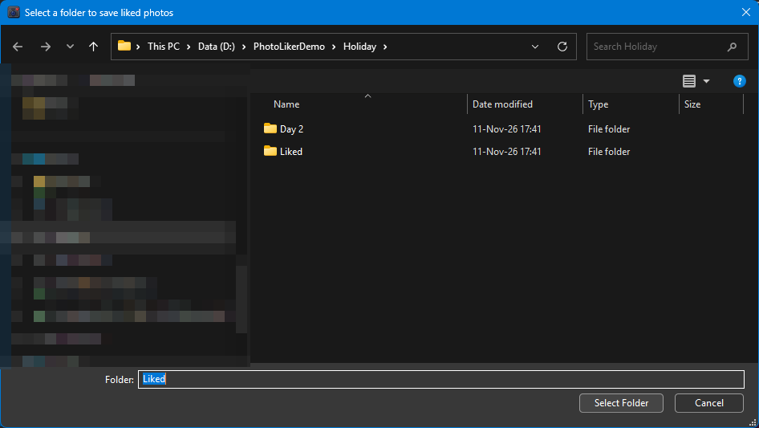
Вікно вибору папки. (Ліву панель вікна на цьому знімку розмито.)
Зміни, після яких папку переглядають заново
Зміна GoThroughSubFolders, Extensions або SortOrder одразу складає список папки наново, і фото, яке ви дивитеся, залишається вибраним, якщо воно ще є в списку.
Інші налаштування цього не потребують: нова LikedFolder використовується з наступного вподобання.
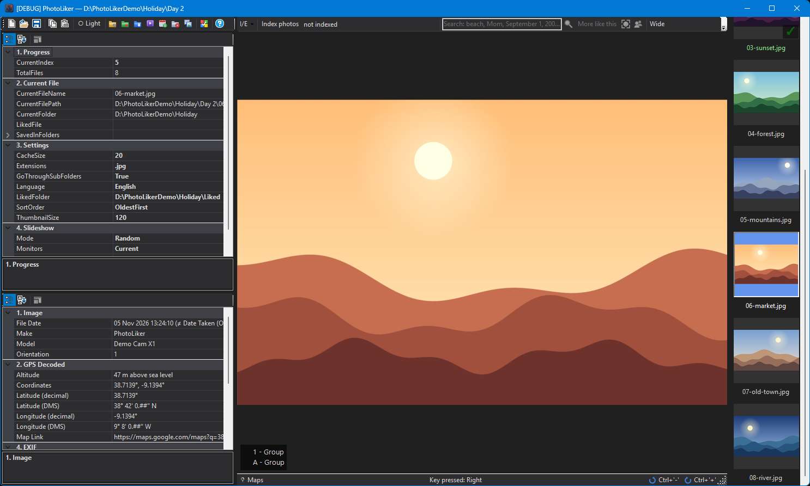
GoThroughSubFolders увімкнено: 8 фото замість 5. Заголовок вікна називає підпапку показаного фото.
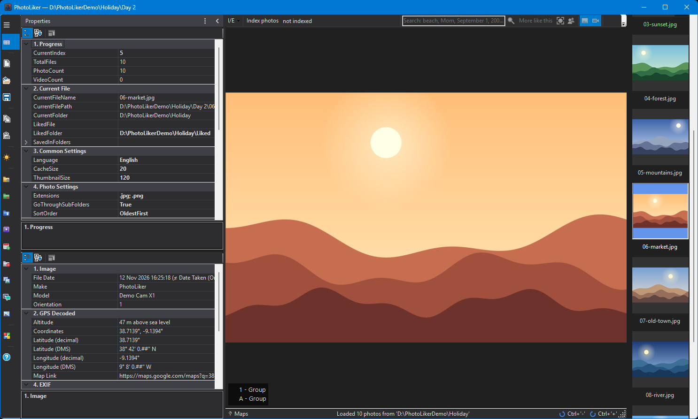
Якщо додати .png до Extensions, з’являються файли PNG.
12. Порядок фото
SortOrder визначає порядок списку, а отже, куди ведуть стрілки, Home, End і
PageDown / PageUp:
OldestFirst (за замовчуванням) і NewestFirst йдуть за датою створення кожного файлу. Ця дата надходить разом зі списком папки,
тому сортування нічого не коштує, навіть на мережевому диску.
ByName йде за назвою файлу, так, як це робить Провідник: регістр не має значення, а числа сприймаються як числа,
тому IMG_2 стоїть перед IMG_10.
Random перемішує фото. Щоразу, коли фото перелічують заново (відкриття папки ще раз, F5, пошук, створення відео), порядок новий.
None не сортує: фото йдуть у тому порядку, в якому їх віддає диск. Це найшвидше для папки з дуже великою кількістю фото.
Дата створення — це момент, коли файл з’явився на цьому диску. Фото, скопійоване з картки чи іншого диска, зазвичай має дату копіювання,
а не зйомки, тому папка, скопійована за один раз, іде в порядку копіювання. Align dates встановлює датою файлів дату зйомки фото.
Результати пошуку підпорядковуються тому самому налаштуванню, але йдуть за датою зйомки фото, яку індекс знає для кожного фото.
13. Великі папки
Скласти список папки на мережевому диску довго: що більше підпапок, то довше (6,6 секунди для 16 000 фото в 985 папках на домашньому роутері;
хвилини для великого архіву). Тому PhotoLiker зберігає список.
Вперше папку переглядають повністю, і список зберігається на цьому комп’ютері.
Далі папка відкривається одразу із збереженого списку, а поки ви вже дивитеся фото, програма у фоновому режимі перевіряє, що змінилося.
Коли перевірку закінчено, нові фото з’являються в списку, фото, яких більше немає, зникають, фото, яке ви дивитеся, залишається на місці, а рядок стану повідомляє, що знайдено.
Фото, яке інша програма змінила на місці, ця перевірка не помічає. F5 складає список папки заново.
Збережені списки — лише зручність. Їх можна видалити будь-коли; тоді папки переглядають заново.
14. EXIF і GPS
Таблиця під налаштуваннями показує те, що камера записала в показане фото (EXIF): виробника і модель, витримку, спалах, дату зйомки та інше — по групах.
Виберіть рядок — і панель під таблицею простими словами пояснить його. Рядок All Metadata у розділі Debug містить усе у вигляді тексту.
Якщо у фото є місце зйомки, воно показується координатами, висотою тощо, а рядок Map Link і посилання Maps праворуч у рядку стану
відкривають це місце в Google Maps.
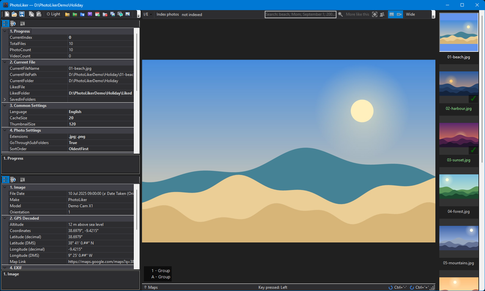
Таблиця з даними про фото і місцем зйомки.
Дати показано з місяцем словом: 14 Aug 2025 09:12:07.
Date Taken (Original) — коли знімок зроблено. Date Last Saved — коли програма востаннє зберегла фото; фото, яке пізніше повертали чи редагували,
покаже тут той день. PhotoLiker (пошук за датою, порядок списку, Align dates) керується першою.
Рядок File Date — не EXIF: це дата файлу на диску. Він закінчується на (= Date Taken (Original)), якщо файл має дату зйомки,
і на (≠ Date Taken (Original)), якщо ні (скопійований файл отримує день копіювання).
Рядки з датами можна редагувати у JPEG: Date Taken (Original), Date Time Digitized, Date Last Saved і File Date.
Впишіть дату (2015-05-01 14:30:00, 01.05.2015 14:30; дата без часу береться на полудень) або натисніть кнопку … рядка й виберіть її. Фото зберігається з нею.
Нова Date Taken (Original) дається й датам файлу; File Date змінює лише файл. Фото без дати зйомки показує там (none): впишіть дату — і воно її отримає.
Три кнопки панелі інструментів наводять лад у папці з фото. Усі вони працюють однаково: спершу дивляться і показують, що зробили б,
нічого не змінюється, доки ви не натиснете кнопку, яка це виконує, а те, що вони переміщують, переміщується, а не стирається.
Align dates
Фото, скопійоване з картки, телефона чи старого диска, має датою файлу день копіювання, а справжня дата лише всередині нього (EXIF). Align dates встановлює датами файлів
дату зйомки, щоб Провідник, інші програми й порядок списку (SortOrder іде за датою створення) збігалися з камерою.
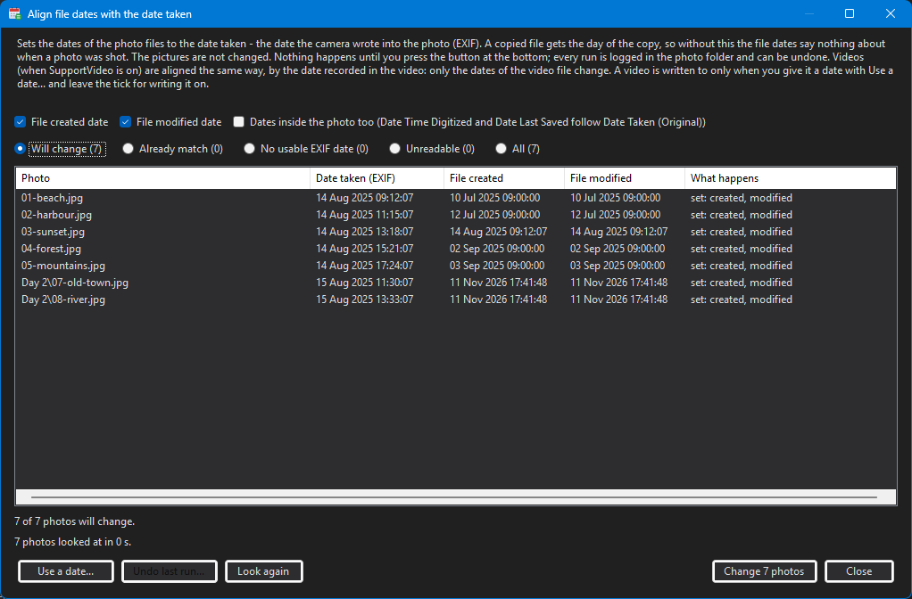
Вікно Align dates: зміняться 7 фото. У кожному рядку — дата зйомки, теперішні дати створення й зміни та те, що буде встановлено. Нічого не змінюється, доки ви не натиснете Change 7 photos.
Вікно читає початок кожного файлу і показує Will change (з датою зйомки та теперішніми датами), а також списки фото, які Already match, мають No usable EXIF date
або Unreadable. Для десятків тисяч фото це триває хвилини, і це можна зупинити.
Прапорці вибирають, що встановлювати: дату створення і дату зміни файлу (увімкнено) і, за бажанням, інші дати всередині фото (вимкнено).
Виберіть фото й натисніть Пробіл, щоб не брати його до цього запуску. Подвійне клацання на рядку відкриває фото.
Відео. Коли ввімкнено SupportVideo, відео теж у списку: дата, записана у відео, — його дата зйомки, і змінюються лише дати його файлу (відео потім не аналізується заново). У відео записують лише тоді, коли ви вказуєте йому дату через Use a date… і лишаєте позначку: дата, яку відео каже про свій запис, тоді перезаписується на місці (MP4, MOV, 3GP: заголовок фільму; AVI: поле дати від камери), розмір не змінюється, а Undo last run… повертає старі байти.
Фото без придатної дати. Камера, що втратила годинник, записує 2001-01-01; таким датам не вірять. Виберіть такі фото й натисніть Use a date…, щоб дати їм дату:
ту, що вже є у фото, дату з назви його папки (2015-05-01, 01.05.2015 Anna), дату файлу, точну дату зміни файлу (для скопійованого архіву: кожен файл створений у день копіювання, але дата зміни лишається правильною) або ту, яку ви впишете. Дату також записують у фото як його
Date Taken (Original) (позначка, типово ввімкнена), навіть якщо в фото не було для неї місця: тоді файл трохи збільшується, а Undo її прибирає.
Ця сама кнопка працює для будь-яких позначених файлів, також тих, що вже мають придатну дату: обрана вами дата замінює її, тож кілька файлів можна датувати за іншим правилом, ніж решту.
Change N photos виконує зміну, а копії в папках Liked і груп отримують ті самі дати. Кожен запуск записує журнал у папці з фото, а Undo last run… повертає дати назад.
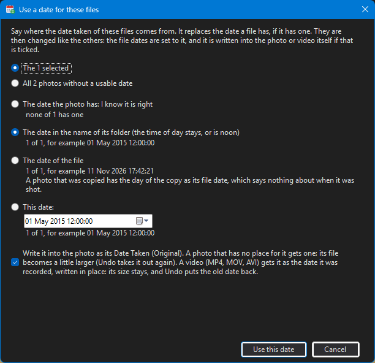
Use a date… питає, звідки взяти дату для фото без придатної, і для кожної відповіді показує, у скількох фото вона є й якою буде. Позначка внизу записує дату у фото.
Remove empty folders
Після переміщення і видалення фото лишаються порожні папки, а Windows залишає кеші мініатюр (Thumbs.db) у тих, які показувала.
Кнопка перелічує папки, де немає нічого корисного: зовсім нічого, лише файли мініатюр, або лише інші такі самі папки. Усе вже позначено; натисніть Remove N folders, щоб їх видалити.
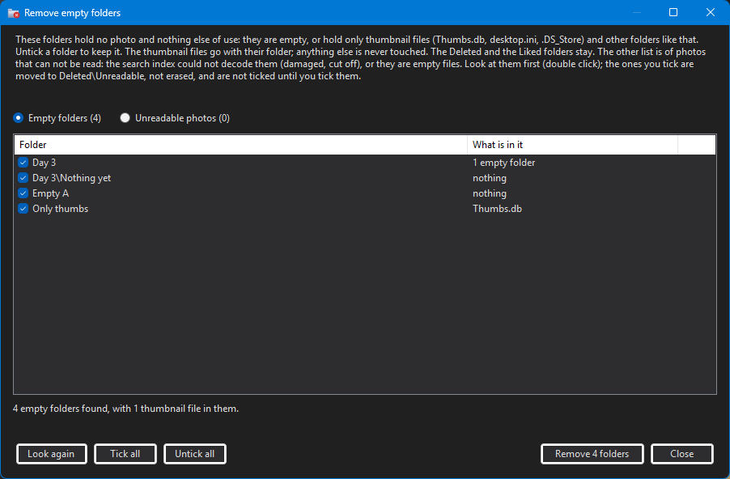
Вікно Remove empty folders: чотири папки, у кожної — що в ній є (нічого, порожня папка, Thumbs.db). Другий вибір угорі — список фото, які неможливо прочитати.
Правило суворе: будь-який інший файл зберігає свою папку і всі папки над нею. Папка Deleted, папка Liked з групами та системні й NAS-папки не чіпаються.
Саму папку з фото ніколи не видаляють.
Зняття позначки з папки знімає позначки з папок над нею; позначення папки позначає ті, що всередині. Подвійне клацання на рядку відкриває папку в Провіднику.
Фото, які неможливо прочитати. Другий список містить пошкоджені фото й порожні (0 байтів) файли фото, знайдені під час перегляду папок. Спершу в ньому нічого не позначено.
Позначте ті, що мають піти, і натисніть Move N to Deleted\Unreadable: їх буде переміщено, а не стерто.
Find duplicates
Фото копіюються: картка в папку з назвою дня, та сама картка вдруге, папка з відбракованим. Find duplicates знаходить фото, які показують точнісінько ту саму картинку в різних папках,
залишає по одному, а решту копій переміщує в Deleted\Duplicated усередині папки з фото, зберігаючи шлях, яким вони були.
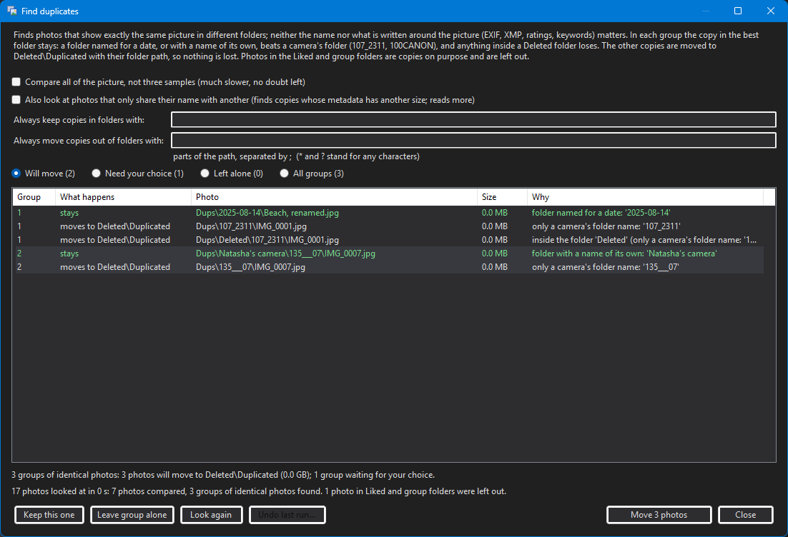
Вікно Find duplicates: три групи однакових фото. У кожній групі копія, що залишається, зелена, а ті, що переміщуються, — під нею, і кожен рядок пояснює чому. Два поля над списком змінюють правила.
Назва файлу не має значення, так само як і оцінка чи ключове слово, додані до фото пізніше: вирішує картинка. Compare all of the picture працює повільніше й не залишає сумнівів.
Яка копія залишається, вирішує папка — так, як зробили б ви самі: папка з датою в назві (2014-11-23) або з власною назвою (Crete trip) перемагає папку камери
(100NIKON, 314CANON); усе всередині Deleted чи Trash програє; файл, назва якого каже, що це копія (IMG_5407 - Copy.JPG, IMG_5407 (2).JPG), програє.
Копії, які й далі рівні, лишаються на ваш вибір і не переміщуються, доки ви не вирішите.
Кожен рядок пояснює чому. Виберіть фото й натисніть Keep this one, щоб воно залишилося, або Leave group alone. Хоча б одна копія кожної групи завжди залишається.
Подвійне клацання на рядку показує картинку.
Move N photos виконує переміщення; запуск записується в журнал, а Undo last run… повертає копії. Фото в папках Liked і груп ніколи не розглядаються: це навмисні копії.
Не наводьте лад у папці, поки її індексують для пошуку: спершу зупиніть індексацію.
16. Розфарбування чорно-білих фото
PhotoLiker додає кольори чорно-білим фото за допомогою моделі ШІ, що працює на вашому комп’ютері. Ваші фото не змінюються: кожен результат зберігається
поруч із фото як назва (colorized).jpg, з датою зйомки та іншими даними фото, і ніколи поверх іншого файлу. Уперше PhotoLiker питає, чи завантажити модель (135 МБ, один раз).
Панель над фото
Коли фото, яке ви дивитеся, чорно-біле, внизу картинки з’являється невелика панель. Її кнопки мають картинки, а не слова: наведіть курсор на кнопку, щоб побачити її назву й що вона робить.
Розфарбувати (фото, наполовину сіре, наполовину кольорове) показує фото з кольорами (близько двох секунд). Тоді кнопка має картинку сірого фото й називається Показати оригінал: вона одразу повертає сіре фото.
Сила і Тепло (від холоднішого, синішого, до теплішого, жовтішого) змінюють кольори поки ви тягнете повзунок; подвійний клік повертає повзунок на місце. Якщо сила 0,
тепло дає всьому фото один відтінок, як у сепії.
Зберегти копію (дискета) записує те, що ви бачите, як назва (colorized).jpg поруч із фото; можна зберегти кілька копій з різними налаштуваннями.
Багато фото... (стос фото) відкриває вікно нижче. ✕ закриває панель; кнопка Colorize на панелі інструментів повертає її, для будь-якого фото. Точкову ручку зліва можна тягнути, щоб посунути панель.
Кольори переходять на наступне чорно-біле фото, яке ви дивитеся, доки ви не натиснете Показати оригінал. Для фото з кольорами панелі немає.
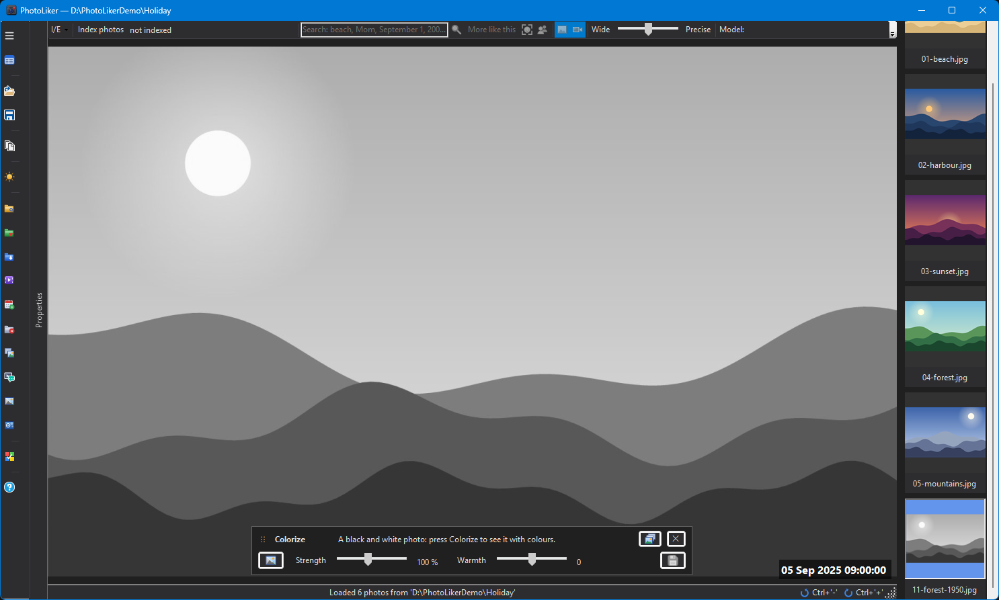
Чорно-біле фото й панель розфарбування над ним: повзунки сили та теплоти й кнопки кольорів, копії та багатьох фото. (Намальоване демо-фото, зроблене сірим.)
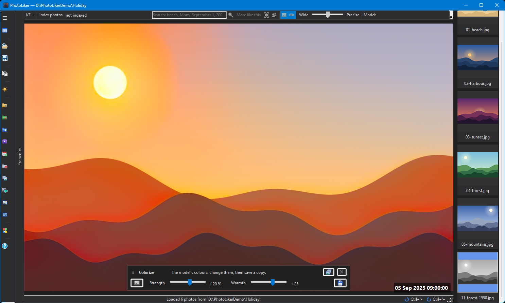
Те саме фото з кольорами, які дала модель, трохи сильнішими й теплішими: картинка йде за повзунками, поки ви їх тягнете.
Багато фото одразу
Кнопка Colorize, коли жодного фото не показано, або Багато фото... відкриває вікно:
Це фото розфарбовує показане фото, яким би воно не було. Чорно-білі фото зі списку переглядає кожне фото списку (папки чи результатів пошуку) і показує ті,
що не мають кольору або мають лише один відтінок (коричневий відбиток, синій), усі з позначками: зніміть позначку з тих, що мають лишитися як є. Фото, яке вже має копію, є в списку, але без позначки.
Сила кольорів: 100 — як дає модель, менше — блідіше, більше — насиченіше. Тепло зсуває їх до синього або до жовтого й червоного. Обоє починаються з тих значень, що на панелі, а те, що ви задали тут, запам’ятовується, коли вікно закривають: панель і наступне вікно починають із цього.
Colorize починає, Stop закінчує після фото, яке робиться. Одне фото займає близько двох секунд. Коли ви закриваєте вікно, папку переглядають знову, і копії вже в ній.
Кольори — здогад моделі за тим, що на знімку: шкіра, небо, трава й дерево виходять такими, якими бувають, а сукня може бути будь-якого кольору.
17. Перефокусування фото
PhotoLiker може перефокусувати фото вже після зйомки, як це робить телефон у портретному режимі: ви кажете, де фокус, те, що на цій глибині, лишається різким, а ближче чи далі —
розмивається (чим далі від фокуса, тим сильніше), а далеке можна сховати в серпанку. Модель ШІ, що працює на вашому комп’ютері, визначає, наскільки близько кожна частина фото: та сама, яку використовує
ефект Parallax (99 МБ; уперше PhotoLiker питає, чи завантажити її, один раз). Ваші фото не змінюються: результат зберігається поруч із фото як
назва (portrait).jpg, з датою зйомки та іншими даними фото, і ніколи поверх іншого файлу.
Панель над фото
Кнопка Перефокусування на панелі інструментів (після «Розфарбування») відкриває плаваючу панель над показаним фото, угорі вікна перегляду, так само як панель розфарбування
плаває внизу, тож обидві можуть бути там разом. Приблизно за пів секунди після показу фото модель визначає його глибину, і вікно перегляду показує фото в портретному режимі:
Клацніть на фото там, де має бути фокус. Кільце позначає місце. (Клацання — це натискання й відпускання приблизно в одному місці, тож збільшене фото все одно можна пересувати.)
Фокус спершу стоїть на найбільшому обличчі фото, а якщо облич немає — на його середині.
Розмиття — наскільки сильне розмиття там, де воно найсильніше, Різка зона — наскільки глибока зона навколо фокуса, що лишається різкою, а Серпанок — імла над далеким.
Картинка змінюється, поки ви тягнете повзунок; подвійне клацання повертає його на місце. Значення запам’ятовуються для наступного фото й наступного запуску.
Зберегти копію (дискета) записує те, що ви бачите, як назва (portrait).jpg поруч із фото, у прямому положенні, з його даними та датами файлу; можна зберегти кілька копій з різними налаштуваннями.
Кнопка Зберегти на панелі інструментів (Зберегти як) зберігає ту саму картинку там, де ви скажете, у форматі JPEG, якщо ви не оберете інший тип (PNG, BMP, GIF, TIFF).
✕ закриває панель (кнопка Перефокусування відкриває її знову й закриває). Точкову ручку зліва можна тягнути, щоб посунути панель.
Панель лишається відкритою й переходить до наступних фото, доки ви її не закриєте; для відео панелі немає. Вона ніколи не забирає клавіатуру, а саме фото не чіпається: закриття панелі повертає його.
Відкриття розфарбування закриває панель перефокусування, і навпаки, бо обидві змінюють картинку.
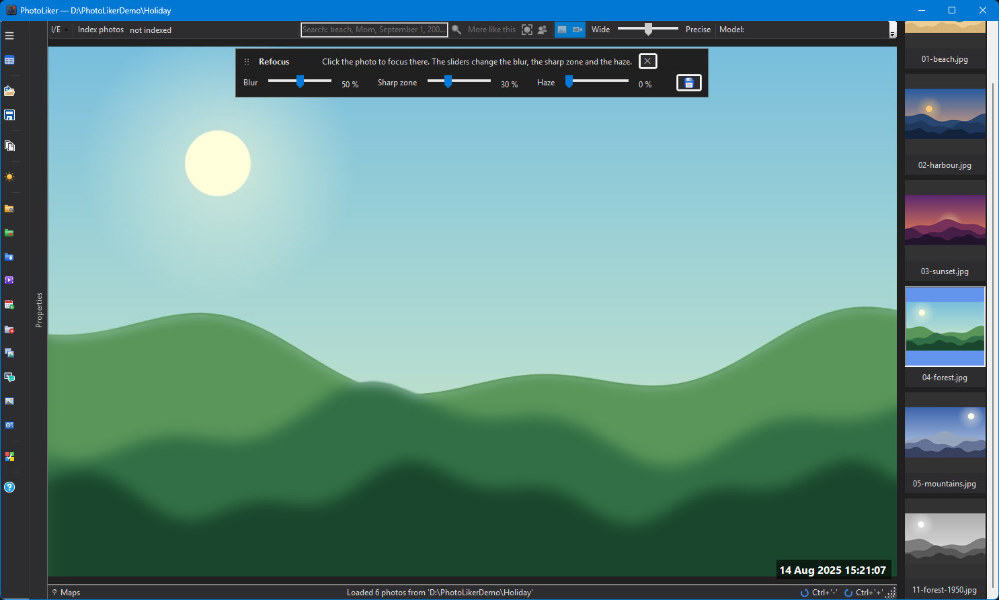
Панель перефокусування вгорі фото (панель розфарбування — внизу) з фокусом там, де його поставила модель глибини: посередині картинки. (Намальоване демо-фото.)
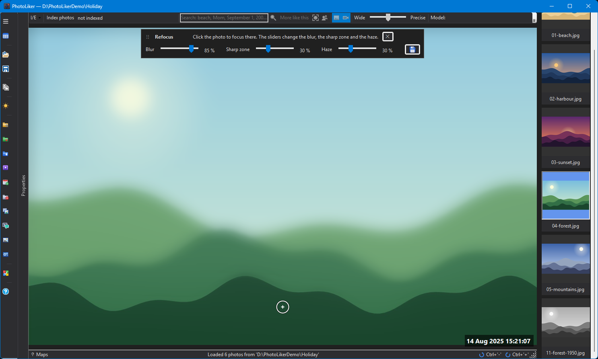
Клацання на найближчих пагорбах (кільце) ставить фокус туди; розмиття збільшено й додано серпанок: далеке м’яке й затуманене.
Глибина — здогад моделі за одним знімком: тонка річ (дріт, волосина, листя дерева) перед фокусом може розмиватись разом із тим, що за нею, а край навколо різкої людини м’який, не вирізаний.
Фото, де далеко середина (краєвид), починається з різкими далекими частинами й розмитими близькими: клацніть на те, що має бути різким.
18. Створення відео
Кнопка Generate Video перетворює фото на відео: кожне фото показується на мить, одне за одним, за бажанням — після титульної картинки і з піснею під ними.
Нічого додатково встановлювати не треба.
Виберіть фото. Відео створюється з фото однієї папки. Найпростіше вподобати потрібні фото Пробілом (або розкласти їх по групах і робити одне відео на групу),
а потім відкрити вікно.
Натисніть Generate Video — кнопку із зображенням кіноплівки на панелі інструментів (стовпчик значків біля лівого краю вікна; три смужки вгорі показують назви кнопок, як на малюнку). Вікно відкривається одразу.
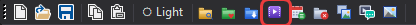
Виберіть фото і порядок.Photos from містить Current (те, що зараз показує вікно: папку або результати пошуку), Liked і кожну папку групи,
кожну з кількістю фото. Sort order задає порядок у відео: від найстаріших, від найновіших, за назвою, випадково або як у списку. Output folder змінюється разом з вибором,
тож відео опиняється поруч із фото, з яких його зроблено; Output file name — його назва.
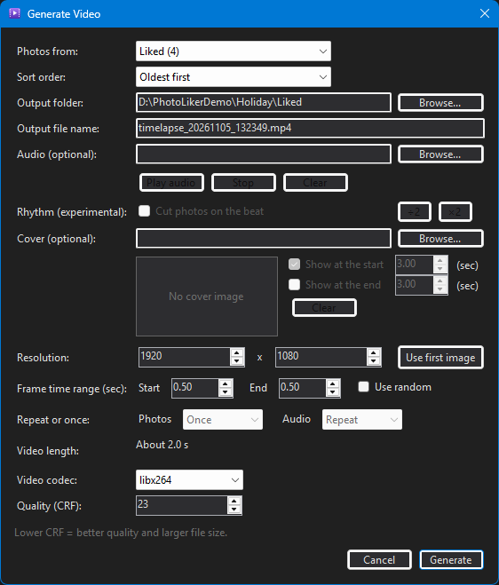
Титульна картинка (необов’язково).Cover: натисніть Browse…, виберіть картинку — і мініатюра покаже її. Show at the start (позначка стоїть спершу) робить її першою картинкою відео
незалежно від порядку, на стільки секунд, скільки вказано в полі поруч (спершу 3 секунди).
Show at the end (спершу не позначено) показує її ще раз після останнього фото, на стільки секунд, скільки вказано в полі поруч. Clear прибирає її.
Пісня (необов’язково).Audio: натисніть Browse… і виберіть файл mp3, m4a, wav, flac, ogg чи будь-який інший звуковий файл.
Play audio і Stop дають змогу послухати його заздалегідь, а його тривалість показано (Length: 3:25). Пісня, довша за відео, обривається там, де закінчується відео; коротша повторюється знову й знову.
Скільки показується кожне фото.Frame time range (sec): Start — час першого фото, End — час останнього, а фото між ними йдуть рівними кроками.
Use random дає кожному фото власний час між цими двома. Video length показує, скільки триватиме відео і що станеться з піснею, і змінюється разом з кожною вашою зміною.
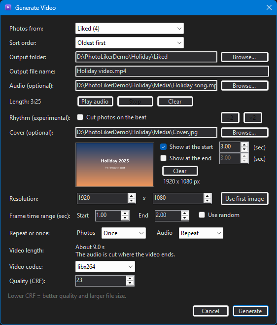
Repeat or once (потрібна пісня).Photos: Repeat показує фото знову й знову, поки не закінчиться довга пісня, замість того щоб її обривати.
Audio: Once програє коротку пісню один раз, а решта відео лишається без звуку.
Різати фото в такт (експеримент, потрібна пісня).Cut photos on the beat знаходить удари пісні й міняє фото на ударі:
кожне фото показується ціле число ударів, якнайближче до його часу. Смуги, що відкриваються внизу вікна, показують, наскільки сильно б’є звук (сині), знайдені удари
(помаранчеві) і місця зміни фото (зелені); ÷2 і ×2 беруть знайдені удари за удвічі менше чи удвічі більше, якщо темп визначено хибно.
Поки позначка стоїть, Use random і Photos: Repeat вимкнено.
Ефект (за бажанням). Оберіть ефект показу слайдів для фото відео: None (фото як є, за замовчуванням), Random (для кожного фото інший) або один з них, наприклад
KenBurns, Wipe чи Parallax. Фото рухаються, поки їх показано, і переходять одне в одне, як у показі слайдів; обкладинка стоїть на місці. Вибір зберігається разом
із текою фото, тож кожна тека й кожна група має свій. Parallax, Portrait і DollyZoom потребують модель, що визначає глибину: PhotoLiker питає, чи завантажити її (99 МБ, один раз), коли ви
обираєте один з них. З ефектом відео малюється кадр за кадром, тож воно робиться довше: від третини часу, що воно триває, до стільки ж. Решта працює, як і раніше.
Розмір і якість.Resolution — розмір відео (1920 × 1080 — це Full HD; Use first image бере розмір першого фото).
Video codec: libx264 грає всюди, libx265 дає менші файли, які читає не кожен програвач, і саме з нього починає вікно в теці без збережених налаштувань (потім воно повертає кодек останнього відео). Quality (CRF): що менше число, то краща якість і більший файл; звичайне число — 28 для libx265 і 23 для libx264 (однаковий вигляд), і вікно переставляє його, коли змінюють кодек, якщо ви не задали його самі.
Натисніть Generate. Вікно збільшується, щоб показати смугу прогресу й журнал. Фото, яких уже немає на диску з часу складання списку, пропускаються,
а фото, зняті телефоном у вертикальному положенні, повертаються правильно. Коли журнал напише Video generation completed, відео вже в папці призначення, а кнопка Play його відкриє. Налаштування вікна зберігаються у файлі photo-liker-video.json у папці з фото й підставляються наступного разу,
коли ви виберете цю папку.
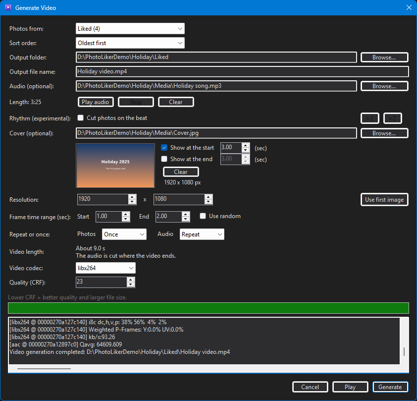
Тривалість відео показано до початку, тож можна спершу спробувати часи й порядок фото та натиснути Generate, лише коли все влаштовує.
Якщо щось не так.«No photos in this folder»: спершу вподобайте кілька фото або виберіть Current. Повідомлення, що ffmpeg не знайдено: перевстановіть
PhotoLiker (немає його папки ffmpeg) або додайте ffmpeg.exe у PATH.
GIF з відео. Щоб вставити кілька секунд готового відео в README чи чат, покажіть відео у вікні (або виберіть його кнопкою Огляд... у вікні Video to GIF), див. GIF з відео.
19. Створення книги
Кнопка Make a book («Створити книгу»; бірюзова книга з фото на обкладинці, після Help і роздільника) робить із ваших фото книгу у форматі PDF або
EPUB: сторінка для кожного фото, текст, який ви пишете над ним, і текст під ним, а фото йдуть у порядку, який ви виберете. EPUB — це книга для читалки чи програми для читання; PDF — сторінки для
екрана або для друку. Нічого більше встановлювати не треба.
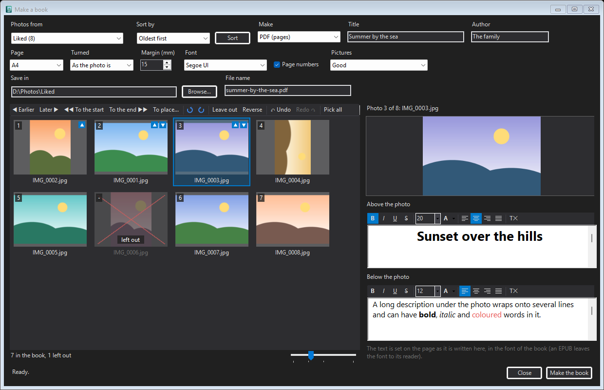
Виберіть фото. У списку Photos from («Фото з») є завантажені фото (Current, на них вікно починає; якщо нічого не завантажено — на Liked), тека Liked і кожна група, з кількістю фото в кожній.
Фото спершу йдуть у порядку з Sort by; кнопка Sort у будь-який час розставляє їх знову.
Розставте їх. Мініатюри — це порядок книги. Перетягуйте фото туди, де вони мають бути (лінія показує місце); Ctrl або Shift вибирають кілька.
Кнопки зверху або Alt зі стрілками пересувають вибрані фото на одне місце, Alt+Home і Alt+End — на початок і в кінець, а кнопка
To place... питає номер. Leave out (Delete) лишає фото в списку, але не включає до книги. Дві круглі стрілки повертають вибрані фото на чверть
вліво або вправо (Ctrl+- і Ctrl++): лише в книзі, файли фото не змінюються. Усе можна скасувати (Ctrl+Z).
Повзунок під списком збільшує й зменшує мініатюри.
Напишіть. Виберіть одне фото: праворуч з'явиться воно саме і два поля, Above the photo («Над фото») і Below the photo («Під фото»). Це наче маленький текстовий редактор:
жирний, курсив, підкреслений, закреслений, розмір і колір тексту, рядки по лівому краю, по центру, по правому краю або по ширині, а також списки з маркерами чи з номерами (дві кнопки після вирівнювання:
натисніть ще раз ту, що натиснена, щоб вилучити абзац зі списку, або натисніть Enter у порожньому пункті). Кнопка ¶ показує пробіли, табуляції та кінці рядків маленькими позначками поверх тексту, яких у тексті й у книзі немає.
На мініатюрі, над якою чи під якою є текст, стоїть синя позначка.
Виберіть книгу.Make: PDF, EPUB або DOCX (документ Word). Title («Назва», і Author, «Автор») робить першу сторінку. Для PDF і DOCX ще вибирають сторінку (A4, A5, Letter або квадрат),
як її повернуто (книжкова, альбомна або як у кожного фото), поле, шрифт і чи нумерувати сторінки; Pictures каже, наскільки чіткими лишаються фото (малі файли, добра, найкраща — для друку).
Далі Save in і File name.
Натисніть Make the book. Фото готуються, файл записується; смуга показує, скільки вже зроблено, а Cancel зупиняє роботу. Коли все готово, Open відкриває книгу.
Усе, що ви робите, зберігається разом із текою фото, у файлі photo-liker-book.json: порядок, пропущені фото, повороти фото, кожен текст і кожне налаштування. Закрийте вікно і відкрийте
пізніше — книга буде такою, як ви її залишили; фото, додані до теки відтоді, підуть у кінець. Тож роботу можна робити в кілька присідань.
Який вигляд має книга. У PDF кожне фото має власну сторінку: текст над ним, фото настільки велике, наскільки лишає місця сторінка, і текст під ним. Надто довгий текст переходить на наступну
сторінку. Літери вкладаються у файл, тож будь-яка програма для читання правильно показує українські (та інші) літери, а текст можна шукати й копіювати. В EPUB програма для читання сама підганяє текст під екран і
користується власним шрифтом, тож сторінка, поле і шрифт із вікна не діють; кожне фото починає нову сторінку, а зміст називає фото за першими словами, написаними над ним. Фото повертаються правильно, а те,
що записала в них камера (нотатки Exif, місце зйомки), до книги не потрапляє.
DOCX — це документ Word (його відкривають Word, LibreOffice та інші текстові редактори): розділ для кожного фото, тож сторінка має форму свого фото, як у PDF; тексти — це текст Word, який можна далі редагувати (жирний, курсив, підкреслення, розмір, колір, вирівнювання, відступи, табуляція та малюнки в тексті); титульна сторінка, номери сторінок, папір, поле й шрифт — ті, що ви вибрали. Рядки розкладає сам Word, тож скільки місця фото дістає на сторінці з текстом — оцінка: перегляньте сторінки у Word.
Якщо щось не так.У цій теці немає фото: спершу вподобайте кілька фото або виберіть Current. Фото названо непрочитаним: це не картинка, яку може прочитати Windows;
решта книги робиться без нього. У списку немає шрифту: його не встановлено на цьому комп'ютері; у списку звичайні шрифти Windows, що мають латинські та кириличні літери. У тексті не може бути
маркерів, таблиць чи картинок, а шрифт один на всю книгу.
20. Векторизація фото
Кнопка Trace bitmap («Векторизація зображення»; помаранчева плитка з кількома пікселями, що перетворюються на криву з вузлом на кожному кінці, кнопка панелі після
Make a book; після неї йде Video to GIF) перетворює показане фото на векторне креслення: фігури з ліній і кривих замість пікселів. Його зберігають як файл SVG або DXF у розмірі
в міліметрах, який ви виберете. Саме це потрібно лазерному різаку, плотеру, гравірувальному верстату, CAD-програмі чи програмі для малювання, як-от Inkscape. Сканування й параметри — ті самі, що у вікні
Trace Bitmap в Inkscape, тож кожне налаштування означає те, що ви там знаєте. Нічого більше встановлювати не треба.
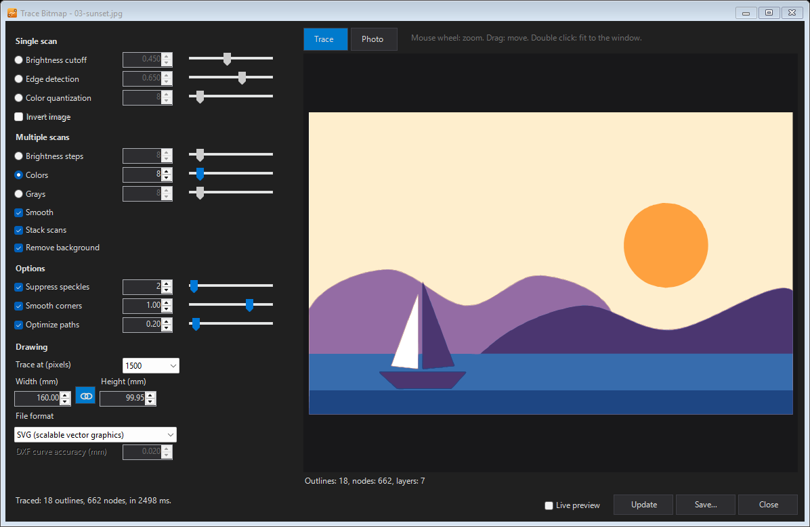
Покажіть фото і натисніть кнопку. Вікно читає фото й одразу векторизує його з налаштуваннями, якими ви користувалися востаннє. Відео векторизувати не можна, і векторизується файл фото, а не те,
що показує панель Colorize чи Refocus.
Виберіть, як розрізати зображення.Одне сканування дає одну чорну фігуру або штриховий малюнок: Brightness cutoff («Поріг яскравості») векторизує те, що темніше за число
(0 — чорний, 1 — білий), Edge detection («Виявлення країв») — краї зображення як лінії (що менше число, то більше ліній), Color quantization («Квантування кольорів») — лінії, де сходяться кілька
зведених кольорів; Invert image векторизує світле замість темного. Кілька сканувань дають для кожного сканування фігуру свого кольору: Brightness steps (сірі фігури),
Colors (кольори, до яких зведено зображення) і Grays. Smooth трохи розмиває зображення, щоб шум фото не перетворився на тисячі дрібних фігур; Stack scans робить так, що кожна фігура
покриває і все темніше, тож щілин немає (добре для заливання; вимкнено — кожна фігура лише власна смуга, добре для контурів); Remove background не додає найсвітлішу нижню фігуру — папір.
Налаштуйте контури.Suppress speckles прибирає найдрібніші фігури й заповнює найдрібніші отвори. Smooth corners заокруглює кути, що недостатньо гострі (0 залишає кожен кут,
1,00 — звичайне значення; вимкнено — лише прямі лінії). Optimize paths використовує менше кривих (більше число — менше вузлів і грубіше креслення). Trace at — у скількох пікселях за довшою
стороною векторизується фото: більше пікселів — більше деталей і вузлів. Біля кожного числа є повзунок, і вони показують те саме значення: перетягуйте повзунок або вводьте чи змінюйте число.
Задайте розмір.Width і Height — у міліметрах (спершу довша сторона — 100 мм). Кнопка-ланцюжок між ними зберігає пропорції фото: змінюєте одну сторону — інша
слідує. Вимкніть її, і сторони незалежні, тож креслення можна розтягнути. File format — SVG або DXF для CAD-програми; для DXF DXF curve accuracy каже, наскільки далеко, в міліметрах, можуть бути від
кривої короткі прямі відрізки, на які її розрізано.
Подивіться.Trace і Photo перемикають картинку посередині, на тому самому місці й у тому самому розмірі, щоб видно було, що змінила векторизація. Колесо миші
масштабує там, де вказівник, перетягування пересуває картинку, подвійний клік вміщує її у вікно. Update векторизує знову після змін (рядок унизу каже, коли параметри змінилися); з
позначкою Live preview це відбувається саме невдовзі після кожної зміни.
Натисніть Save... і введіть назву. Назва, що закінчується на .svg або .dxf, визначає формат. Якщо після останньої векторизації ви змінили параметр, фото спершу
векторизується знову, тож файл завжди відповідає тому, що показує вікно.
Значення вікна запам’ятовуються, розмір теж (як довжина довшої сторони), тож наступне фото матиме розмір, яким ви користувалися востаннє.
Що в файлах.SVG має розмір у міліметрах, і координати в ньому теж у міліметрах, тож Inkscape, програма для лазера чи плотера та CAD-програма, що читає SVG, одержують
розмір, який ви просили. Кожен колір — один контур, залитий так, що отвори лишаються отворами, без обведення, найсвітліший знизу. DXF — це проста стара форма R12, яку читає кожна CAD-програма, в міліметрах:
кожен контур — замкнена полілінія (отвір — просто ще один контур усередині), кожен колір має власний шар, названий за номером і кольором (TRACE_2_C8501E). У DXF немає кривих, тому кожну криву розрізано на короткі
прямі відрізки; креслення перевернуто, бо y зображення йде вниз, а y креслення — вгору, щоб воно виглядало так, як зображення.
Якщо щось не так.Забагато дрібних фігур: позначте Smooth (кілька сканувань), збільште Suppress speckles, візьміть менше кольорів чи кроків або менше Trace at.
Замало деталей: збільште Trace at, зменште Optimize paths чи Smooth corners. За цих параметрів нічого не знайдено: поріг яскравості нижчий за всі пікселі (або все зображення одного
кольору); спробуйте інше значення. Векторизатор у програмі власний, не Inkscape (той використовує Potrace), тож фігури схожі, але вузли не ті самі; Color quantization одного сканування малює лінії, де сходяться кольори.
21. GIF з відео
Кнопка Video to GIF («Відео в GIF»; фіолетова плитка з трикутником «грати» і круглою стрілкою, після Trace bitmap; далі йде Telegram sticker) робить
анімований GIF із частини відео. GIF сам відтворюється всюди, де можна показати картинку (README на GitHub, чат, вебсторінка), а відеофайл — ні, тож кілька секунд запису екрана, наприклад
відео, яке ви зробили в розділі Створення відео, можна вставити як є. Нічого більше встановлювати не треба: GIF робить ffmpeg, що йде разом із програмою.
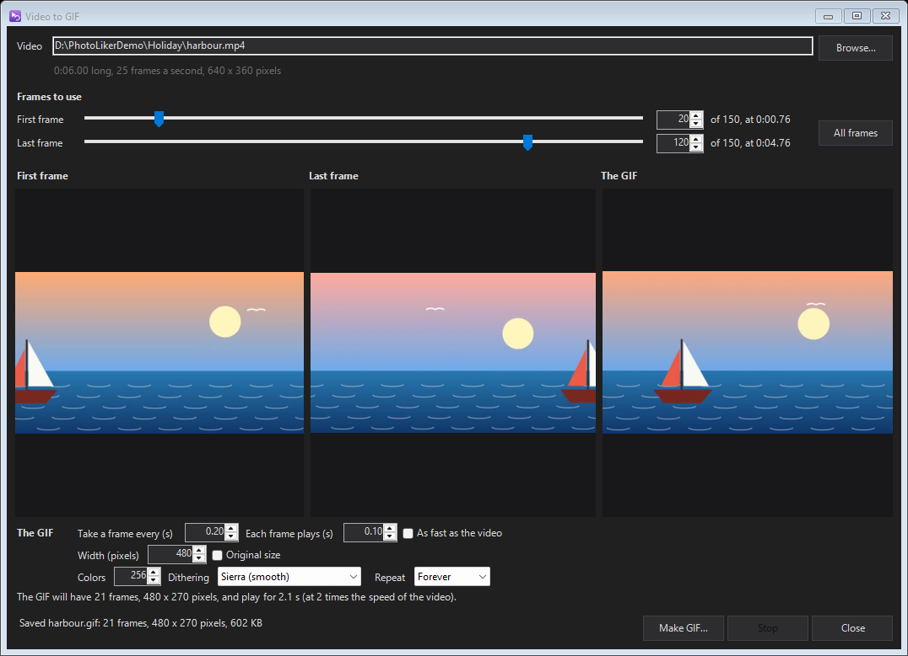
Покажіть відео й натисніть кнопку. Вікно відкривається для відео, що показане. Якщо показане фото (або нічого), воно спершу питає, яке відео взяти; Огляд... дає змогу вибрати інше
відео будь-коли.
Виберіть кадри. Частина відео, що стане GIF, — усе відео, доки ви цього не зміните. Перший кадр і Останній кадр мають по повзунку й по числу (кадри рахуються з 1) та час
цього кадру; під ними показано картинки обох кадрів, тож видно, де GIF починається і де закінчується. Перший кадр не може опинитися за останнім, а останній — перед першим. Усі кадри повертає
обидва на місце.
Виберіть, яким буде GIF.Брати кадр кожні (секунд, десяткове число від 0,02 до 60: 0,1 — десять кадрів на кожну секунду відео, досить плавно для екрана; 2,5 — кадр кожні дві з половиною секунди, для GIF зі слайдів) і Кожен кадр грає (скільки секунд показується кожен кадр GIF, той самий діапазон: це швидкість GIF. Кадри кожні 0,5 секунди з показом по 0,1 дають GIF у 5 разів швидший за відео; поле неактивне й таке саме, як перше, поки позначено Як швидко йде відео (на початку воно позначене)), Ширина в пікселях (висота підбирається сама; вужче відео не розтягується) або
Початковий розмір, Кольорів (від 2 до 256), Змішування (Сьєрра найплавніша, Байєр малий і стійкий, «Без» найменший, але на градієнтах видно смуги) і Повтор
(безкінечно або один раз). Під налаштуваннями вікно каже, яким буде GIF: скільки кадрів, якого розміру й скільки він триватиме.
Натисніть «Зробити GIF...» і вкажіть назву (назва відео в його теці). Смужка показує роботу: спершу шукаються найкращі кольори для кадрів (це триває стільки, скільки читання відео один
раз, і відсотків немає), потім малюються кадри. Зупинити зупиняє роботу й нічого не лишає; GIF, що був раніше, залишається, доки новий не буде цілим. Коли все готово, GIF відтворюється у вікні поруч
з двома кадрами, а рядок знизу каже, що зроблено: кадри, розмір у пікселях і розмір файлу.
Для README: GitHub показує картинку завширшки не більш ніж близько 800 пікселів, тож 480–640 пікселів, кадр кожні 0,08–0,12 секунди й кілька секунд дають GIF в один-два мегабайти. Якщо GIF завеликий,
кожне з цього робить його меншим: коротша частина, довший час між кадрами, вужча ширина, менше кольорів, без змішування.
Значення вікна запам’ятовуються, а кадри — ні: вони належать одному відео.
Якщо щось не так.Відео не вдалося прочитати: ffmpeg не знає такого файлу або файл пошкоджено. GIF не зроблено, у частині немає кадрів: відео коротше, ніж каже його
файл; виберіть більш ранній останній кадр. Повідомлення, що ffmpeg не знайдено: перевстановіть PhotoLiker (бракує його теки ffmpeg) або покладіть ffmpeg.exe у свій PATH.
22. Створення стікера для Telegram
Кнопка Telegram sticker («Стікер для Telegram»; синє обличчя на білому стікері, вирізаному по контуру, із загнутим кутиком; після Video to GIF; після неї йде Draw)
перетворює показане фото на стікер для Telegram: об’єкт фото вирізається, дістає білий контур і м’яку тінь, які мають стікери, і зберігається як картинка з прозорим тлом, довша сторона якої рівно
512 пікселів, у файлі, який приймає Telegram (WebP — такими є власні стікери Telegram — або PNG; не більш ніж 512 КБ). Об’єкт знаходить модель, що працює на цьому комп’ютері,
тож фото нікуди не потрапляє.
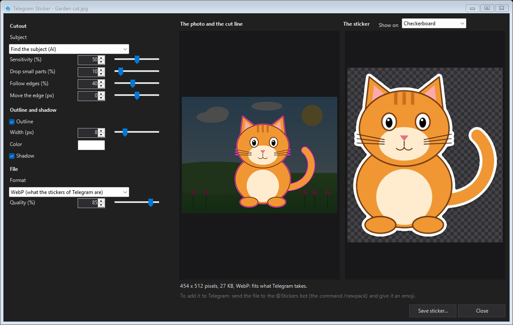
(Картинка у вікні — малюнок, зроблений для цього посібника, а не фото.)
Покажіть фото й натисніть кнопку. Вікно відкривається для показаного фото (з відео стікер зробити не можна). Уперше програма питає, чи завантажити модель, що знаходить об’єкт
(IS-Net, 179 МБ, один раз; вона каже, що це і звідки). Якщо ви відмовитеся, стікером стане весь знімок із заокругленими кутами, а вікно скаже чому; виберіть Знайти об’єкт (ШІ) знову — і воно спитає ще раз.
Погляньте на лінію вирізу. Ліворуч — фото, де вирізане затемнено, а лінію вирізу намальовано рожевим. Приблизно за дві секунди після відкриття вікна модель дивиться на фото, і праворуч
з’являється стікер. Показати на кладе його на шахове тло, темний чат або світлий чат; це лише вигляд, у файлі тла немає.
Підправте вирізання.Чутливість — скільки з того, у чому модель не певна, залишається: більше залишає більше від об’єкта (і від тла біля нього), менше вирізає ближче.
Прибрати дрібні частини прибирає плями, які модель знайшла на тлі (частини, менші за цей відсоток найбільшої; 0 залишає всі частини, 100 лише найбільшу).
Тримати краї притягує лінію вирізу до найближчого краю, що є на знімку, бо власна маска моделі розмита; 0 лишає її такою, як її накреслила модель.
Зсув краю зсуває лінію вирізу на кілька пікселів стікера: менше знімає облямівку старого тла, більше повертає те, що вирізано надто близько. Кожне налаштування має число й повзунок;
стікер переробляється за мить після того, як ви зупинилися.
Зробіть контур, який хочете.Контур — облямівка навколо об’єкта, яка є в стікерів, вирізаних по контуру: спершу біла завширшки 8 пікселів (від 0 до 40 пікселів стікера; Колір
відкриває вікно кольору Windows). Вона обходить пальці й волосся однією плавною лінією: щілини, вужчі за контур, затягуються. Тінь — м’яка тінь під стікером, щоб його було видно і на світлому чаті.
Виберіть файл.WebP — такими є власні стікери Telegram, і він удвічі-вп’ятеро менший за PNG; Якість — скільки з картинки він зберігає (спершу 85). WebP, що вийшов
більшим за 512 КБ, пишеться ще раз із меншою якістю, доки не вміститься. PNG не має якості й не стискається більше: з насиченого фото може вийти файл понад 512 КБ, і тоді рядок під картинками
каже про це червоним; у такому разі виберіть WebP. Цей рядок береться з файлу, який буде збережено, наприклад 454 x 512 пікселів, 27 КБ, WebP: підходить для Telegram.
Натисніть «Зберегти стікер...» і вкажіть назву (назва фото з -sticker, у його теці). Розширення визначає вид файлу (.webp або .png); назва без нього
бере той вид, що вибраний у списку. Файл, що був раніше, лишається, доки новий не буде цілим. Рядок стану каже, куди потрапив стікер.
Щоб додати стікер у Telegram: надішліть файл боту @Stickers, почніть набір командою /newpack, дайте йому назву, надішліть стікер (файлом, щоб його не стиснули) і дайте
у відповідь емодзі для нього; /publish закінчує набір. Решта — в офіційному посібнику Telegram за адресою core.telegram.org/stickers.
Значення вікна запам’ятовуються для наступного фото.
Якщо щось не так.Нічого вирізати: об’єкта не знайдено: на фото немає об’єкта, який може знайти модель (стіна, фонтан); підвищте Чутливість або виберіть Весь знімок.
У вирізці є шматок тла: зменште Чутливість, збільшіть Прибрати дрібні частини або зсуньте край досередини. Вирізано надто близько: підвищте Чутливість або зсуньте край назовні.
Стікер розмитий: фото читається не більш ніж у 1600 пікселів, тож об’єкт, що є малою частиною великого фото, збільшується понад власні пікселі; спершу обріжте фото. Модель не вдалося
завантажити: використовується весь знімок; перевірте з’єднання й виберіть Знайти об’єкт (ШІ) знову. ffmpeg не знайдено: WebP записати не можна; виберіть PNG або перевстановіть PhotoLiker.
23. Малювання на фото і розпізнавання тексту
Кнопка Draw («Малювати»; олівець, який щойно намалював червону криву; після Telegram sticker, перед Scan manuscripts) або Ctrl+Shift+D відкриває вікно, де можна
малювати на показаному фото, писати на ньому текст, обрізати його й розпізнавати текст на ньому, так, як працює редактор Windows «Ножиці». Вікно відкривається навколо фото й показує
його настільки великим, наскільки дозволяє вікно, але не більшим, ніж воно є; воно слідує темній темі. На відео малювати не можна. Вікно Make a book відкриває це саме вікно для будь-якого свого фото.
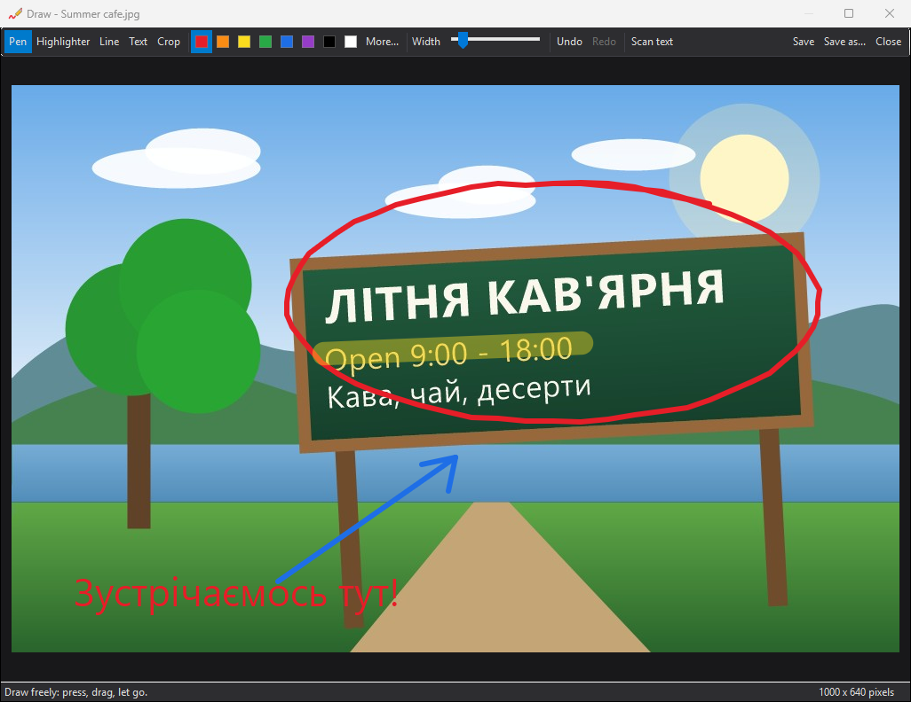
(Картинка у вікні — малюнок, зроблений для цього посібника, а не фото.)
Виберіть інструмент і колір.Pen («Олівець») малює від руки (натисніть, ведіть, відпустіть); Highlighter («Маркер») — ширший штрих, крізь який видно фото; Line («Лінія») —
пряма, від місця, де кнопку натиснули, до місця, де її відпустили. Вісім квадратиків і More... («Ще...», вікно кольорів Windows) — це колір олівця, маркера, лінії й тексту. Width («Товщина») —
наскільки товста лінія так, як вона виглядає на екрані: на великому фото, яке показано меншим, штрих у самому фото робиться товщим, щоб виглядав так само.
Пишіть. З Text («Текст») клацніть там, де має бути текст, і наберіть його (рядків може бути кілька); повзунок тепер — це Size («Розмір») літер. Ctrl+Enter, клацання
деінде на фото або вибір іншого інструмента кладе текст на фото; Esc викидає його.
Обрізайте. З Crop («Обрізати») на фото з’являється рамка, спершу вся фото. Протягніть нову рамку над частиною, яку треба залишити, пересуньте її за середину, змініть за краї й кути.
Keep this part («Залишити цю частину», Enter) обрізає фото по рамці, Cancel («Скасувати», Esc) забуває рамку.
Поверніть.Rotate left («Повернути вліво») і Rotate right («Повернути вправо»; дві круглі стрілки; Ctrl+- і Ctrl++) повертають малюнок на чверть.
Це крок, як і інші, тож Undo скасовує його, а те, що ви малюєте після нього, лежить на повернутому малюнку. Користуйтеся цим для фото, що збережене на боці.
Скасовуйте кроки.Undo («Скасувати», Ctrl+Z) скасовує останній крок, Redo («Повторити», Ctrl+Y) повертає його, скільки б кроків не було. Саме фото
не змінюється, доки ви не збережете.
Розпізнайте текст.Scan text («Розпізнати текст») знаходить рядки тексту на малюнку (або в рамці інструмента «Обрізати», якщо вона є) і читає їх: українською, російською, білоруською, болгарською та англійською.
Рядки позначаються синім (вони можуть бути трохи нахилені), а текст показується збоку, згори, а рядок зліва направо. Copy («Копіювати») кладе його в буфер обміну (виділену частину або весь),
Hide («Сховати») прибирає бічну панель, Esc зупиняє розпізнавання, що триває. Для малюнка в мегапіксель це близько двох секунд.
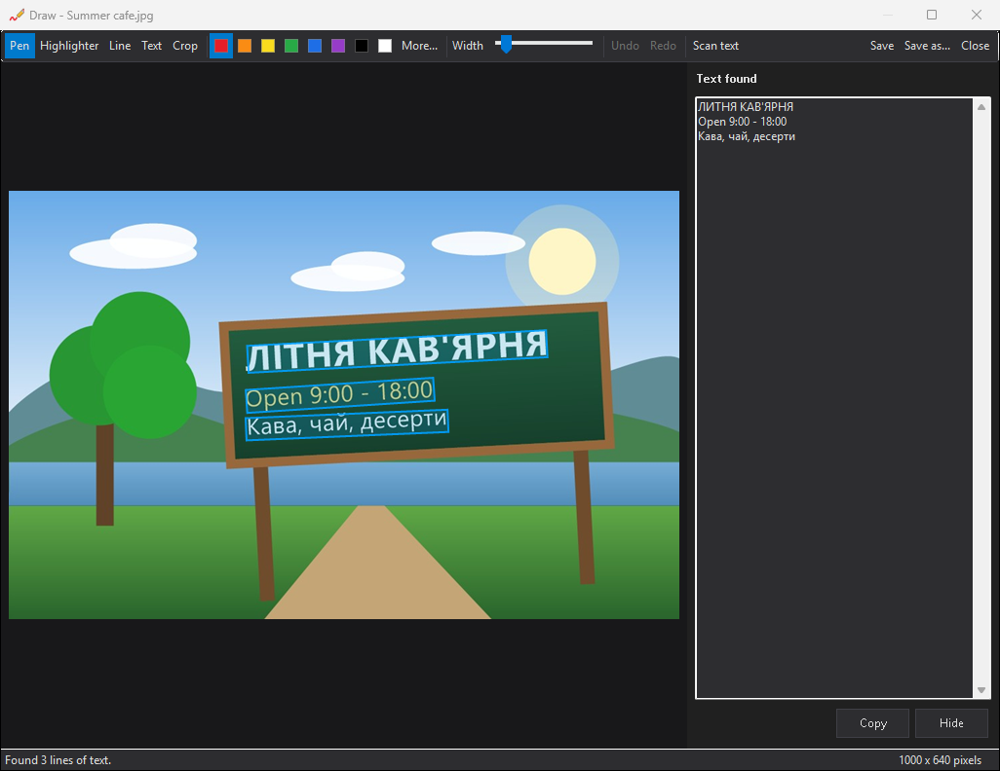
Уперше програма питає, чи завантажити дві моделі (ту, що знаходить рядки, 3 МБ, і ту, що їх читає, 8 МБ; один раз, і вона каже, що це і звідки). Вони працюють на цьому комп’ютері, тож фото нікуди не потрапляє.
Збережіть.Save («Зберегти», Ctrl+S) записує малюнок поверх фото в його власному форматі (JPEG, PNG, BMP, GIF або TIFF); дати файлу, а також дата зйомки,
камера й автор фото зберігаються. JPEG, який лише повернули, зберігається записом повороту тільки в його Exif, як це роблять кнопки повороту головного вікна: малюнок не кодується знову, а весь його Exif, дата зйомки й дати файлу лишаються точно такими, як були. Фото у WebP або HEIC перезаписати не можна: скористайтеся Save as... («Зберегти як...», Ctrl+Shift+S), що робить інший файл (назва фото з
(edited); формат визначає розширення, яке ви наберете). Закриття вікна із незбереженими змінами питає, чи зберегти їх.
Після збереження поверх фото фото має інші пікселі, тож програма вважає його зміненим: його копії в теках Liked і груп перейменовуються відповідно, а Update index
читає його для пошуку знову (обличчя й слова пошуку — це обличчя й слова малюнка, на якому малювали).
Якщо щось не так.Розпізнавання нічого не знайшло: текст дуже дрібний чи розмитий, або перевернутий; обріжте до тексту й розпізнайте ще раз. Літера хибна: схожі літери іноді плутаються (українська І може
вийти як И, як на картинці вище), а рукописний текст читається погано; перегляньте знайдене, перш ніж на нього покладатися. Моделі не вдалося завантажити: нічого не розпізнається; перевірте з’єднання й натисніть
Scan text знову. Фото завелике: фото більш ніж на 100 мільйонів пікселів для малювання не відкривається.
24. Розпізнавання рукописних і друкованих сторінок
Кнопка Scan manuscripts («Розпізнавання рукописів»; аркуш паперу з рядками синього рукопису й зеленою галочкою; найостанніша кнопка панелі, після Draw) або
Ctrl+Shift+M відкриває вікно, яке читає рукописні й друковані сторінки в текст. Ви читаєте текст поруч із фото й виправляєте його, програма зберігає вашу роботу разом із текою, щоб ви могли продовжити іншого дня, а текст
стає PDF, EPUB або документом Word. Воно зроблене для того, що в родині є в зошитах і листах: щоб читати їх, шукати в них, друкувати й зберігати. Сторінки — це усі завантажені фото, як у вікні книги (відео й файли, що не є картинками, пропускаються), а показане фото відкрито. Вікно слідує темній темі.
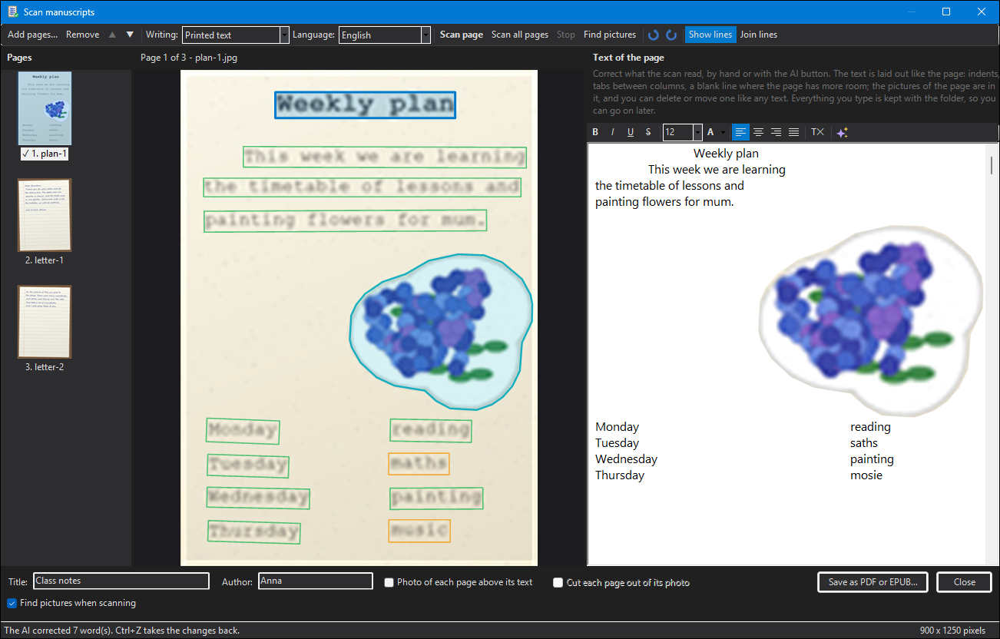
(Сторінку на картинці зроблено для цього посібника: вицвіла англійська картка, надрукована на машинці, з намальованою наліпкою й таблицею з двох колонок; її прочитано як друкований текст, бо англійський рукопис читається погано, див. кінець цього розділу. Читач хибно прочитав дев’ять слів (оранжеві рамки — де він був найменш певний); потім натиснули кнопку ШІ: він виправив сім і залишив два, як каже рядок стану. Текст праворуч розкладено, як на сторінці: заголовок і перший рядок абзацу з відступом, наліпка стоїть між абзацом і таблицею, а табуляція відділяє дві колонки таблиці.)
Додайте сторінки. Усі завантажені фото вже є сторінками (не більше 1000: тека, де їх більше, — це тека фото, а не рукопису); вікно відкривається одразу, скільки б їх не було, а мініатюри читаються у фоні, для сторінок, які ви бачите. Add pages... («Додати сторінки...») бере ще фото з файлів (їх ставлять у порядку назв). Список ліворуч показує кожну сторінку з мініатюрою й позначкою: нічого (ще не розпізнана),
галочка (розпізнана, не змінена) або олівець (ви змінили текст). Remove («Прибрати») забирає сторінку з рукопису (якщо на ній є текст, спершу питає; файл фото не чіпають; сторінка лишається поза рукописом, коли ви знову відкриєте вікно, доки Додати сторінки... її не поверне), а дві стрілки пересувають її вгору чи вниз.
Оберіть, звідки беруться сторінки. Список Фото з над списком сторінок каже це, як і у вікні книги: Поточні (фото, що завантажені; вони обрані, коли вікно відкривається), Вподобані або одна з груп, кожна з кількістю фото.
Кожне місце має власний рукопис, що зберігається в його власній теці. Вибір іншого місця зберігає відкритий рукопис і відкриває рукопис іншого, з його сторінками, текстами, назвою й налаштуваннями; фото, нові в теці, додаються як сторінки. Місце, на яке ви тільки глянули, нічого не записує. Список вимкнено, поки працює розпізнавання.
Скажіть, що написано.Writing («Письмо») — це Handwriting («Рукописне»), Printed text («Друкований текст») або Сервіс ШІ (див. нижче). Language («Мова») — Ukrainian («Українська»), Russian («Російська»), English («Англійська») або Multilanguage («Кілька мов»; сторінка, де разом українська, російська й англійська, як у словничку), для обох видів. Мова не пускає літер, яких у ній немає
(без ы в українській, без і в російській, без кирилиці в англійській; «Кілька мов» не відсікає нічого). Моделі англійського рукопису немає: англійську й змішані сторінки читає українська модель, яка знає латинські літери, але не навчалася на англійській, тож чекайте, що вони читатимуться гірше. Вид письма й мова, якими розпізнано кожну сторінку, запам’ятовуються й знову вибираються в двох полях, коли ви відкриваєте сторінку.
Розпізнайте.Scan page («Розпізнати сторінку») читає відкриту сторінку; Scan all pages («Розпізнати всі сторінки») читає одну за одною кожну сторінку, на якій ще немає тексту, а інші лишає як є; Rescan all pages («Розпізнати всі сторінки знову») читає кожну сторінку ще раз, і ті, на яких є текст, із видом письма та мовою, які обрано зараз, тож користуйтеся ним, змінивши їх (спершу воно питає і каже, на скількох сторінках є текст, який ви писали чи виправляли, — його теж буде замінено); Stop («Стоп») зупиняє після рядка, який читається. Першого разу програма один раз питає, чи завантажити
моделі (що вони, скільки важать, звідки); вони працюють на цьому комп’ютері, тож фото нікуди не потрапляють. Сторінка з 20 рядків потребує кількох секунд. Текст розкладається, як на сторінці: рядок, що починається далі від краю, ніж інші, дістає відступ такий, як на сторінці; рядки поруч в одному ряду (колонки таблиці) стають одним рядком із табуляцією між ними; порожній рядок стоїть там, де на сторінці більше місця, ніж звичайно. Навколо кожного рядка на фото малюється рамка: зелена, де читач певний, оранжева, де ні, червона, де майже ні. Дивіться насамперед на оранжеві й червоні.
Show lines («Показати рядки») вимикає й вмикає рамки. Шукати малюнки під час розпізнавання (під текстом; увімкнено, доки ви не вимкнете) шукає малюнки на сторінках теж, див. нижче.
Читайте фото разом із текстом. Колесо миші збільшує фото, перетягування зсуває його, подвійне клацання вміщує його у вікно. Клацання на рамці виділяє її ряд у тексті, а курсор у ряду тексту виділяє його рамку на фото (поки в тексті стільки ж рядків, скільки рядів на фото). Малюнки й порожні рядки рядами не є.
Текст — це поле з інструментами вікна книги: жирний, курсив, підкреслення, закреслення, розмір, колір, вирівнювання та списки з маркерами чи номерами («T✕» знімає форматування, відступи й список теж). Кнопка ¶ показує, де пробіли, табуляції та кінці рядків, що допомагає побачити, що скан зробив із рядом сторінки. Друкуйте поверх того, що неправильно, або доручіть це ШІ, див. нижче.
Дві стрілки на початку кнопок, Скасувати і Повторити (Ctrl+Z і Ctrl+Y), повертають і знову виконують те, що ви надрукували чи зробили кнопками; з’єднання рядків і кожна зміна кнопки ШІ — це по одному кроку. Текст іншої сторінки, яку відкрито, кроком не є: «Скасувати» ніколи не повертається в нього.
З’єднайте рядки.Join lines («З’єднати рядки») робить один рядок із кожного абзацу: розрив рядка між двома рядками стає пропуском, порожній рядок лишається, де був (розпізнавання ставить його там, де на сторінці між двома рядками більше місця, ніж звичайно), слово, перенесене з дефісом наприкінці рядка, склеюється.
Це діє на виділений текст, а як нічого не виділено — на весь, і вигляд тексту лишається.
Виправте текст за допомогою ШІ. Кнопка із зірками праворуч у кінці кнопок тексту виправляє те, що скан прочитав хибно, мовною моделлю, яка працює на цьому комп’ютері (Qwen2.5 1.5B Instruct): нічого з нього не виходить. Вона працює з виділеним текстом, а коли нічого не виділено — з усім, по абзацу; Stop («Стоп») зупиняє її й нічого не змінює.
Першого разу програма один раз питає, чи завантажити модель (1,8 ГБ і її список слів, 7 МБ). Відповідь моделі не береться як текст: береться лише слово, яким вона замінила схоже на нього слово (так, як помиляється скан), тож рядки, табуляції, відступи, малюнки й числа лишаються, а слово, яке вона додала чи згубила, ігнорується.
Одне Ctrl+Z повертає всі зміни. Вона певна в англійській і російській (lbrary стає library, гриоов стає грибов; на картці вище вона виправила сім слів із дев’яти) і менш певна в українській: виправляє такі огріхи, як недилю, але для слова, прочитаного до невпізнання, може дати інше хибне.
Те, що скан загубив зовсім, вона вгадати не може (saths лишилося saths), тож дивіться, що вона зробила, поруч із фото. Сторінка зі 100 українських слів — близько хвилини.
Скористайтеся ChatGPT, Gemini чи Claude замість неї. Список ШІ у рядку над текстом (біля кнопки ШІ) каже, яким ШІ користується кнопка ШІ: Цей комп’ютер (модель вище) чи сервісом ШІ, для якого ви ввели ключ.
Сервіси ШІ... відкриває вікно ключів: по блоку для OpenAI (ChatGPT), Google Gemini і Anthropic Claude, із ключем (прихований, доки не поставите позначку Показати; Отримати ключ відкриває сторінку, де сервіс його створює) і моделлю, яку питати.
Перевірити ключ просить у сервісу список його моделей: це безкоштовно, показує, чи ключ прийнято, і заповнює список (сервіси перейменовують свої моделі кожні кілька місяців, тож можна ввести будь-яку назву). Сервіс без ключа не показується у списку ШІ; перший введений вами ключ обирається сам.
Ключ зберігається на цьому комп’ютері в зашифрованому для вашого облікового запису Windows вигляді й надсилається лише власному сервісу.Кнопка ШІ надсилає сервісу текст сторінки, по абзацу (ніколи не фото), тож що компанія з ним робить, сказано в її умовах і у вашому тарифі: для приватного лишайте Цей комп’ютер.
Його відповідь береться слово за словом, як і відповідь моделі, а одне Ctrl+Z повертає зміни. Нічого не завантажується. Якщо ключ не прийнято, досягнуто ліміту або немає з’єднання, рядок стану каже про це словами сервісу (але без ключа), а текст лишається.
Нехай сервіс ШІ прочитає фото. Третій вид у списку Writing («Письмо»), Сервіс ШІ, надсилає фото сторінки сервісу, обраному у списку ШІ, і кладе в сторінку текст, який він пише назад. Сервіс, що вміє бачити, читає рукопис і друк будь-якою з мов
набагато краще за моделі цього комп’ютера (скоропис, таблицю слів і їхніх перекладів, англійський рукопис). Фото залишає ваш комп’ютер: програма питає першого разу для кожного сервісу, поки вікно відкрите. Фото надсилається зменшеним (не більше 2000 пікселів по стороні), а сервісу кажуть писати точно те, що є на сторінці, рядок за рядком,
з порожнім рядком там, де на сторінці більше місця, табуляцією між колонками та [?] для слова, якого він не може прочитати. Сторінка, прочитана так, не має рамок на фото (сервіс каже, що написано, а не де), якщо не ввімкнути Lines on the photo («Рядки на фото»); малюнки на сторінці все одно шукаються. Scan page і Scan all pages працюють, як і раніше;
сервіс, що відмовив, зупиняє розпізнавання зі своїми словами в рядку стану, а вже прочитані сторінки лишаються прочитаними.
Рядки на фото. Прапорець поруч зі списком ШІ (вимкнений, доки ви його не ввімкнете; працює, коли обрано сервіс ШІ, а у списку «Письмо» стоїть «Сервіс ШІ») дає сторінці рамку навколо кожного рядка, тож клацання на рамці
виділяє її рядок у тексті, як і з моделями цього комп’ютера. Сервіс не вміє сказати, де рядок, тож рядки спершу знаходить цей комп’ютер: невелика модель, що шукає рядки (3 МБ, завантажується один раз), обводить кожен пронумерованою червоною рамкою, сервісові надсилається таке фото, і він пише, що в кожній рамці;
текст рамки стає там, де її рамка. Це коштує приблизно стільки, скільки звичайне читання. Що модель-шукач зробить не так, те й на сторінці буде не так: вона обводить і лінії зошита та плями (сервіс лишає їх порожніми), може розрізати рядок на шматки на клітинках, а рядок, якого вона не знайшла, не читається, тож дивіться на рамки.
Рамка зелена, а оранжева там, де сервіс позначив слово рядка як [?]. Коли жодного рядка не знайдено або відповідь не вдалося використати рамка за рамкою, сторінка читається ціла і не має рамок, а рядок стану про це каже.
Дайте ШІ попередні сторінки. Позначка Враховувати контекст попередніх сторінок (поруч зі списком ШІ; вимкнена, доки ви її не ввімкнете, і зберігається разом із рукописом) дає сервісу кінець тексту сторінок перед цією, до 3 сторінок, щоб він орієнтувався на імена, слова й правопис цього рукопису.
Вона діє для кнопки ШІ й для читання видом Сервіс ШІ, і цей текст теж надсилається сервісу. Це для сервісу; модель на цьому комп’ютері його не отримує.
Поверніть фото, яке лежить на боці.Turn left і Turn right («Повернути вліво» і «вправо»; дві круглі стрілки; Ctrl+- і Ctrl++) повертають саме фото у його файлі: JPEG — через його Exif (нічого не кодується знову, Exif і дата зйомки лишаються), інше фото — через його пікселі; дати файлу зберігаються.
Рамки повертаються разом із ним, тож нове розпізнавання не потрібне.
Знайдіть малюнки. На сторінці може бути малюнок: наліпка, малюнок, вклеєне фото, штамп. Find pictures («Знайти малюнки») шукає їх на відкритій сторінці моделлю стікерів для Telegram (вона проводить контур навколо того, що виділяється; рядки тексту спершу замальовуються, тож виділяються лише малюнки)
і обводить кожен блакитно-зеленим на фото (Show lines вимикає обводи разом із рамками). Кожен малюнок вирізається з фото за його контуром (те, що поза ним, прозоре) і вставляється в текст, між рядками, де він на сторінці, ліворуч, посередині чи праворуч — як було, і такої ж ширини.
Він — частина тексту: видаліть його або виріжте й вставте деінде, як слово, і книга матиме його там, де він стоїть. Повторне Знайти малюнки вставляє малюнки знову, замість тих, що були. Шукати малюнки під час розпізнавання робить те саме для кожної сторінки, яку ви розпізнаєте; першого разу програма питає, чи завантажити модель (179 МБ, один раз, той самий файл, що й для стікерів Telegram),
а коли ви кажете «ні», розпізнавання триває лише з текстом. Кольорові й суцільні малюнки знаходяться; олівцевий ескіз серед олівцевого письма — ні.
Зробіть книгу.Save as PDF, EPUB or DOCX... («Зберегти як PDF, EPUB або DOCX...») питає назву; розширення вирішує формат (DOCX — документ Word, текст якого можна далі редагувати: розділ для кожної сторінки, тексти з жирним, відступами й табуляцією, фото таким, яке воно є). Title («Назва») й Author («Автор») стоять на першій сторінці, а мова книги — та, якою розпізнано більшість її сторінок. Photo of each page above its text («Фото кожної сторінки над її текстом») кладе фото сторінки в книгу (сторінка без тексту — це лише її фото); без цього книга — лише текст, із малюнками, що стоять у ньому, відступами й табуляціями, як у полі тексту.
Cut each page out of its photo («Вирізати кожну сторінку з її фото») знаходить на фото аркуш, прибирає стіл і вирівнює аркуш, щоб кожна сторінка стояла рівно й заповнювала свою сторінку в книзі. Воно користується моделлю стікерів для Telegram (179 МБ, завантажується один раз, якщо ви її ще не завантажували) і витрачає близько двох секунд на фото; фото, на якому аркуш знайти не вдалося, лишається таким, як зняте,
а рядок стану каже, скільки не вдалося вирізати. Подивіться на сторінки книги: сторінка дивної форми може вийти обрізаною.
Покладіть сторінку як фото. Кнопка Page as photo («Сторінка як фото») після стрілок, що переміщують сторінку, кладе відкриту сторінку в книгу як її ціле фото, таким, яке воно є (не вирізане, без тексту на ньому), незалежно від того, чи є в книзі фото: для малюнка, таблиці, карти, сторінки, яку жодне розпізнавання не читає.
У списку сторінка має ▣; натисніть кнопку ще раз, щоб покласти її як текст. Її текст зберігається, а вибір зберігається разом із рукописом.
Усе, що ви робите, зберігається разом із текою фото, у файлі photo-liker-manuscript.json: сторінки та їх порядок, що прочитано, що ви набрали й який це має вигляд, рамки рядків, обводи малюнків і малюнки в тексті (кожен — кілька сотень кілобайтів), вид письма й мова кожної сторінки, назва й автор.
Його пишуть через півтори секунди після вашої останньої зміни й коли вікно закривається. Відкрийте вікно знову в тій самій теці — і все на місці. Шляхи у файлі відносні, тож теку можна переносити.
Наскільки добре воно читає. Моделі рукопису зроблені для сторінок XIX і XX століття та чистої лінії пера. На власних тестових сторінках їхніх авторів українська читається з приблизно 5 хибними символами зі 100. На сторінках, знятих телефоном, воно читало охайний рукопис пером із приблизно 10 хибними зі 100, а шкільні роботи й екзаменаційні аркуші — з 20–60 хибними зі 100;
блякле або тісне письмо олівцем на клітинках і слова двома мовами (українська модель знає латинські літери, але не навчалася на англійській) читалися набагато гірше. Родинні листи й щоденники — десь посередині: чекайте текст, який можна прочитати й виправити, а не такий, якому можна довіряти. Тому текст показано поруч із фото, а рамки мають колір за певністю читача.
Друкований текст читається значно краще, лише з кількома помилками між и та і в українській, які читач бачить схожими.
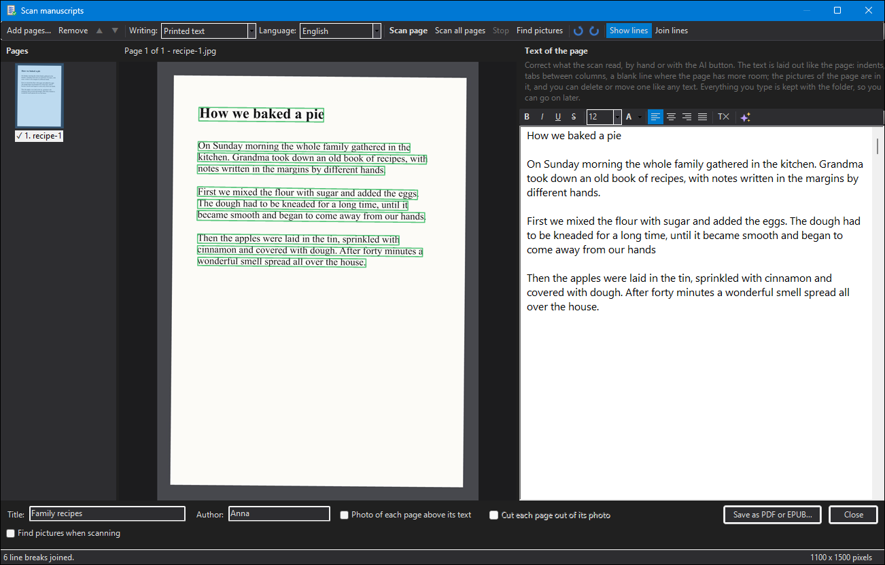
(Друковану сторінку набрано для цього посібника.)
Якщо щось не так.Нічого не знайдено: спробуйте інший вид письма або поверніть фото правильно. У тексті повно хибних літер: письмо виходить за те, чого модель навчилася (див. вище); виправляйте за фото або перепишіть сторінку від руки друкованими літерами й розпізнайте як друкований текст.
Моделі не вдалося завантажити: нічого не розпізнається; перевірте з’єднання й натисніть Розпізнати сторінку ще раз. У книзі сторінка обрізана: вимкніть Вирізати кожну сторінку з її фото і зробіть книгу знову. Малюнка немає, або шматок письма взяли за малюнок: видаліть хибний у тексті й натисніть Знайти малюнки знову, або вимкніть Шукати малюнки під час розпізнавання; олівцевий ескіз не знаходиться, а клаптик письма рідко беруть за малюнок. ШІ хибно змінив слово: натисніть Ctrl+Z (одне натискання повертає все, що він зробив) і виправте вручну, або виділіть лише ті рядки, на які хочете, щоб він глянув.
25. Відео в теці
У теці старого сімейного архіву поряд із фото лежать відео: AVI з фотоапарата, MP4 і MOV з телефона. SupportVideo у таблиці налаштувань за замовчуванням увімкнено
(вимкніть, щоб тека виглядала як до відео) — і відео теки з’являться в списку разом із фото, в тому самому порядку, а також у підтеках, якщо ввімкнено
GoThroughSubFolders. Які файли вважаються відео, визначає рядок VideoExtensions; програвач відтворює майже всі існуючі формати. Тека, де лежать лише відео, працює так само:
відкрийте її як окрему теку. Зміна будь-якого з цих рядків одразу перечитує теку.
Що ви бачите
Відео показує свою картинку-постер (кадр з десятої частини відео, не далі ніж на 5-й секунді) з круглим знаком відтворення і тривалістю в кутку; його мініатюра має маленький знак відтворення.
Замість EXIF у таблиці під налаштуваннями є категорія 0. Video: Duration, Frame size, Frame rate, Video codec,
Audio, Bitrate, File size, Recorded, Date from і File dates. Recorded — це дата, яку фотоапарат чи телефон
записав у відео (а якщо її немає — дата файлу); File dates показує дати файлу поруч із нею й каже ≠ Recorded, коли вони різні: скопійований файл створюється під час копіювання,
тож він часто молодший за запис на кілька днів.
Рядок Recorded можна редагувати, як рядки з датами фото: впишіть дату (2015-05-01 14:30:00, 01.05.2015 14:30; дата без часу береться на полудень) або натисніть
кнопку … рядка й виберіть її. Дата записується у відео там, де воно її зберігає (MP4, MOV, M4V, 3GP та блок з датою в AVI з камери; розмір файлу, кожна картинка й звук лишаються як були),
а дати створення й зміни файлу стають тим самим моментом. Відео зберігає свої моменти й мовлення. Відео, в якому немає місця для дати (Matroska, MPEG, WMV), отримує лише дати файлу,
і рядок стану про це каже. Скасування для однієї правки немає: впишіть стару дату назад (інструмент Align dates може скасувати цілий запуск).
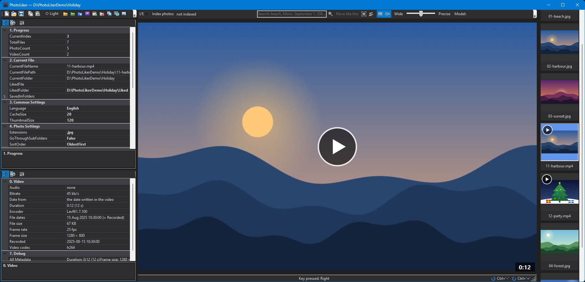
Відео: постер із круглим знаком відтворення й тривалістю в кутку, мініатюра з маленьким знаком відтворення в стрічці праворуч і категорія 0. Video в таблиці ліворуч.
Відтворення
Enter або клацання по постеру кладе програвач поверх картинки. Під ним: відтворити / пауза, де ви зараз (0:12 / 1:17), повзунок, щоб перейти будь-куди (клацніть або потягніть),
поле Go to («Перейти до»), де вводять час і натискають Enter (83, 1:23, 1:02:03 або 1m23s), кнопка вимкнення звуку та гучність.
Клацання по картинці ставить на паузу й відновлює. Shift+← / → — на 5 секунд, Ctrl+← / → — на 30 секунд,
Ctrl+↑ / ↓ змінюють гучність, Esc повертає до постера. Перехід до іншого елемента зупиняє відео.
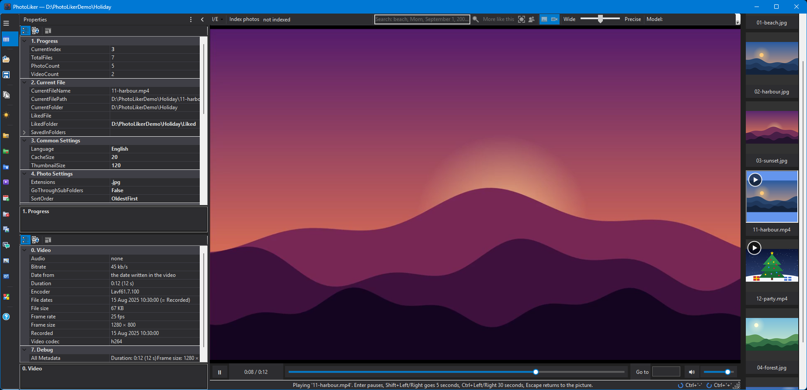
Програвач: відтворити / пауза, де ви зараз (0:08 / 0:12), повзунок, поле Go to, кнопка вимкнення звуку й гучність. Рядок стану нагадує про клавіші.
Перший запуск програвача після встановлення може тривати десять секунд і більше, поки антивірус переглядає його файли; він стартує у фоні, щойно показано відео, а панель пише
Запуск відеопрогравача..., поки той не готовий. Якщо він узагалі не запускається, відео відкривається в програмі, якою Windows відтворює такі файли.
Пошук по відео
Коли ввімкнено SupportVideo, «Оновити індекс» проходить і по відео — після фото, з тією самою моделлю та тією самою кнопкою зупинки. З кожного відео
кожні дві секунди береться кадр, і модель на нього дивиться; кадр, що вже не схожий на останній збережений, стає моментом відео (приблизно кожен третій, зі зменшеною картинкою й обличчями
на ній). Тоді поле пошуку шукає разом по фото й відео: слова (кіт), людину (Мама), дату (вересень 2009) або все разом, а результат — один список, кращі збіги першими. Відео в ньому
стоїть один раз, а переглядач показує, де саме воно збігається: під картинкою — стрічка моментів відео, знайдені пошуком позначено помаранчевим, а на повзунку є помаранчеві мітки на тих самих місцях.
Enter (або клацання) відтворює від найкращого місця, клацання по картинці стрічки переходить туди, а . / , переходять до наступного / попереднього знайденого місця.
Дві кнопки на смузі пошуку, картинка (Фото) і відеокамера (Відео) (є, поки ввімкнено SupportVideo; наведіть вказівник, щоб побачити назву), визначають, де шукати: за замовчуванням обидва ввімкнено,
вимкнене Фото шукає лише у відео (кіт лише серед відео), вимкнене Відео — лише серед фото. Останній ввімкнений вимкнути не можна, вибір зберігається для папки, а показаний
пошук виконується знову, щойно він змінюється. Повзунок точності працює й для відео. Людину знаходять за обличчями в моментах — за прикладами з названих вами фото.
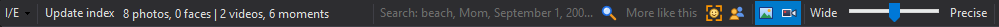
Смуга пошуку з увімкненим SupportVideo: в індексі 8 фото і 2 відео з 6 моментами, а кнопки Photos і Videos стоять поряд зі значками облич і людей.
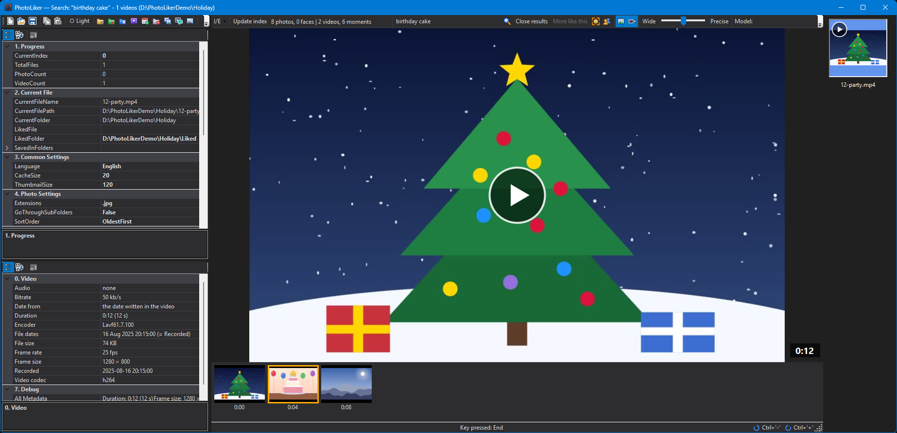
Результат пошуку birthday cake: одне відео. Під картинкою — стрічка його моментів, а той, що збігається найкраще, позначено помаранчевим.
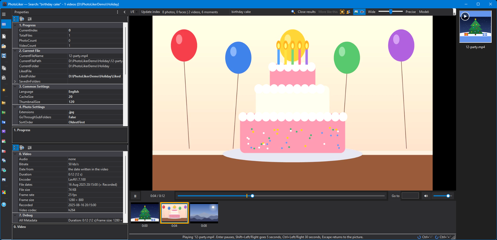
Enter відтворює відео від цього місця (0:04 / 0:12); на повзунку там помаранчева мітка.
На кліпах 640 × 480 з фотоапарата Canon 144 секунди відео індексувалися 19 секунд разом з обличчями; бібліотека на 3 години — близько 20 хвилин, плюс час читання з мережевого ресурсу.
Що кажуть у відео
Увімкніть VideoSpeech (за замовчуванням вимкнено), і «Оновити індекс» перетворить на текст ще й те, що кажуть у відео, — на вашому комп’ютері, моделлю Whisper small
(465 МБ, завантажується один раз, після запитання). Це займає близько третини тривалості мовлення (3 години відео — близько години), і робота продовжується з місця зупинки. Слово, яке ви вводите, шукається
і в сказаному — у будь-якій формі (лошадка знаходить лошадку), а відео, де воно сказане, стоїть перед тими, що лише виглядають доречно. Слова показуються рядком під програвачем, поки відео
відтворюється. Текст — припущення моделі: добре з мовленням дорослих, погано з дитячим і з шумом; задайте SpeechLanguage (ru, uk, en), якщо в родині
говорять однією мовою: коли модель сама визначає мову (auto), вона іноді приймає коротке чи шумне відео за норвезьку, японську чи іншу мову й пише нісенітницю. Коли мову задано,
«Оновити індекс» прочитає знову й відео, які були прочитані як інша мова. Спершу воно запитає, скільки це відео й яка їхня тривалість, бо це замінює їхній текст: «Ні» читає лише
відео, які ще не прочитано, а зупинена робота продовжується з місця зупинки. Нічого не залишає комп’ютер.
Які відео знайдено за мовленням. Відео, знайдене в мовленні, має на мініатюрі у списку збоку бірюзову бульбашку мовлення (наведіть вказівник, щоб прочитати слова), а рядок стану
каже, скільки відео знайдено так. У переглядачі місця, знайдені в мовленні, мають бульбашку на стрічці й бірюзову мітку на повзунку, а те, що знайшли картинки, лишається помаранчевим; наведіть вказівник на
момент стрічки чи місце на повзунку, щоб прочитати, що там кажуть. Рядок під програвачем показується лише поки хтось говорить і лише для відео, мовлення яких уже прочитано: решту дочитає
«Оновити індекс», папка за папкою.
Більше ніж одна модель. Текст зберігається для кожної моделі мовлення окремо: зміна SpeechModel ніколи не замінює те, що написала інша модель. «Оновити індекс» з новою
моделлю читає кожне відео знову для неї, а повернення до старої моделі нічого не коштує, її текст лишився. Рядок під програвачем і субтитри показу слайдів показують слова моделі з SpeechModel, якщо
вона щось почула у відео, інакше моделі, що почула найбільше; пошук за словами дивиться лише на задану модель.
Таблиця мовлення
Кнопка Video speech на панелі інструментів (кадр відео з хмаринкою мовлення; вона є, поки ввімкнено SupportVideo) відкриває таблицю всіх відео теки, які знає програма
(також із підтек, яких список не показує): шлях до відео від теки, тривалість, коли його знято (дата й час), стан (З мовленням, Нічого не почуто, Ще не прочитано,
Без звуку або помилка), мова, якою його прочитано, кількість моментів і те, що в ньому кажуть. Клацання на назві стовпця сортує за ним, повторне — обертає порядок
(Знято: спочатку найстаріші, потім найновіші; відео без дати, якій можна вірити, лишається порожнім і завжди останнє). Стовпець Моделі перелічує моделі, які чули відео, кожну зі
скількома відрізками мовлення вона знайшла (base (2), small (1) ✓); галочка позначає модель, чиї слова є субтитрами відео: ту, що задано в SpeechModel, якщо вона щось почула у відео,
інакше ту, що почула найбільше. Поле Модель вибирає модель, якої є таблиця (її текст і стан; чого модель не чула, там Ще не прочитано), і «Прочитати знову...» працює нею. Пункт
контекстного меню Прочитати знову моделлю перемикає таблицю на вибрану модель і питає про мову, тож одне відео можна спробувати іншою моделлю; замінюється лише текст цієї моделі для нього, тексти
інших моделей лишаються. Поле Знайти залишає відео, у шляху
або словах яких є введене, а список поруч залишає один стан.
Виберіть відео — під таблицею з’являться його моменти (маленькі кадри, з хмаринкою на тих, де щось кажуть; наведіть вказівник, щоб прочитати слова) і слова з часом. Клацання на моменті виділяє слова, що
звучать там. Подвійне клацання (або Enter) відкриває відео в програмі, яку для нього призначено в Windows. Контекстне меню має
Відкрити, Показати в Провіднику і Прочитати знову іншою мовою....
Прочитати знову... питає мову (одну з 99, які знає модель, або auto; першою пропонується та, що задана в SpeechLanguage) і читає вибрані відео знову;
Прочитати всі знову... робить це для кожного відео зі звуком. Це займає приблизно третину тривалості відео, тож уся бібліотека читається годинами; смужка показує, скільки зроблено, а
Зупинити зупиняє. Текст відео замінюється, коли новий текст готовий, тож зупинений запуск залишає решту як було. Мова зберігається такою, як ви вибрали: «Оновити індекс»
з тією самою мовою в SpeechLanguage не читатиме їх знову (з іншою — спершу запитає). Поки працює «Оновити індекс», відео знову читати не можна.
Експорт в Excel... зберігає кожне відео, також ті, про які нічого не відомо, у файл .xlsx з двома аркушами: рядок для кожного відео (шлях, тривалість, знято, стан, мова,
моменти та їхній час, увесь текст) і рядок для кожного відрізка мовлення (шлях, початок, кінець, текст) — на цьому аркуші зручно фільтрувати й шукати. Клітинка Excel вміщує 32 000 символів, тож довший текст
там обрізається. Файл, який відкрито в Excel, не замінюється: вікно про це скаже.
Збереження кадру з відео
Ctrl+S зберігає кадр, який зараз показує відео (перший, якщо воно не відтворюється), як фото в теці Liked — у повному розмірі, з назвою за відео та місцем
(MVI_4069 1m23s.jpg) і з датою, коли відео було записано в цьому місці, як датою зйомки.
Що працює з відео, а що ні
Space вподобує його, клавіша групи розкладає, Delete переносить у теку Deleted (відео, що відтворюється, спершу звільняється), Ctrl+C копіює файл — усе як із фото.
Показ слайдів (з увімкненим UseVideo) і Align dates беруть відео з собою; повороти, дублікати, «Схожі на це» й «Створення відео» поки що працюють лише з фото: відео з них виключено.
Те, що PhotoLiker прочитав із відео (розмір, тривалість, кодек, дати), і його постер зберігаються на цьому комп’ютері в окремому каталозі поряд з індексом фото, щоб тека з відео на мережевому
ресурсі не читалася знову за кожного візиту. Його можна видалити будь-коли; це коштуватиме лише часу на повторне читання відео. Програвач — рушій VLC. Його немає в установнику (так установник займає 32 МБ замість 55 МБ):
коли SupportVideo вмикають уперше або вперше відтворюють відео, програма каже, який він завбільшки (близько 40 МБ) і звідки береться, та питає. OK завантажує його один раз, із ходом
у рядку стану, і він залишається на вашому комп’ютері, у %LocalAppData%\PhotoLiker\libvlc; більше нічого не змінюється. Якщо відмовитися, відео відкриваються в програмі, якою Windows їх відтворює, а питати знову
почнуть, коли SupportVideo вимкнуть і ввімкнуть. Коли завантаження почало ввімкнення SupportVideo, після нього список папки складається знову (як це робить F5). Його ліцензія та місце, де взяти початковий код, — у теці libvlc поряд із програмою.
26. 3D-моделі (файли STL)
STL — це файл, який CAD-програма записує, зберігаючи 3D-модель, і який слайсер читає перед друком. SupportModels у таблиці налаштувань за замовчуванням увімкнено (вимкніть, щоб тека
виглядала так, як до моделей), і файли STL теки показуються в списку разом із фото, в тому самому порядку, а також у підтеках, якщо ввімкнено GoThroughSubFolders. Які файли є моделями,
визначає рядок ModelExtensions (.stl; інші 3D-формати не читаються). Зміна будь-якого з цих рядків одразу перечитує теку. Читаються двійкові й текстові файли STL; файл, що
не є жодним із них, про це каже в рядку стану.
Що видно
Мініатюра і картинка у вікні перегляду — це модель, видима спереду справа і трохи зверху, світло-блакитно-сіра на темній сцені (однаково в темній і світлій темі). Замість EXIF таблиця під налаштуваннями має
категорію 0. 3D model: Triangles, Size (X × Y × Z у міліметрах), Volume, Surface area, Format (двійковий чи
текстовий), Model name, File size і File dates (а також Skipped triangles, коли у файлі були трикутники з нечисловими значеннями або обірвані).
Файл STL не каже, в яких одиницях його числа; як і програми друку, PhotoLiker читає їх як міліметри. Об’єм точний для замкненої поверхні; для поверхні з дірками це лише те, що охоплює наявна частина.
Як її повертати
Ліва кнопка повертає модель навколо її середини (Z — вгору, як пише CAD-програма), права або середня кнопка пересуває її, колесо
змінює масштаб (Ctrl не потрібен), подвійне клацання починає спочатку. Кнопки у верхньому правому куті дивляться на неї спереду, ззаду, зліва, справа, зверху, знизу або з кута,
з якого її показано спочатку (Ізо); Каркас малює поверх неї ребра трикутників. Три кольорові лінії під кнопками — осі: X червона, Y зелена, Z синя. Поки миша рухається, модель
малюється з частини своїх трикутників, щоб слідувати за рукою; коли миша на мить спиняється, вона малюється вся, з гладкими краями. Малює процесор, тож нічого не залежить від відеокарти.
Що працює з моделлю
Space вподобує її, клавіша групи розкладає, Delete переносить її до теки Deleted, Ctrl+C копіює файл і картинку, а Save робить копію
файлу — усе як із фото. Інструменти, що працюють із пікселями фото (Draw, Trace bitmap, Telegram sticker, Colorize, Refocus, поворот, Scan manuscripts), з моделлю не працюють і кажуть про це; пошук, показ слайдів,
Make a book і Generate Video беруть лише фото (і відео) теки.
PhotoLiker для файлів .stl у Windows
Кнопка STL files на панелі інструментів (синій куб із зеленою галочкою, поруч із Register Context Menu) додає PhotoLiker до списку програм, які Windows пропонує для
файлів .stl, і відкриває сторінку «Програми за замовчуванням» у Параметрах Windows. Вибір типової програми Windows залишає вам (програма не може сама зробити себе типовою), тож
останнє клацання за вами: оберіть там PhotoLiker для .stl; або в Провіднику клацніть правою кнопкою на файлі STL, «Відкрити за допомогою», «Вибрати іншу програму»,
PhotoLiker, «Завжди». Після цього подвійне клацання на файлі STL запускає PhotoLiker на теці цього файлу, на ньому самому. Кнопка світиться, коли вибір Windows — PhotoLiker; коли PhotoLiker уже
в списку, клацання питає, чи відкрити «Програми за замовчуванням» знову, чи прибрати його зі списку. Прав адміністратора не потрібно, а програма видалення прибирає все, що записала кнопка. Будь-який інший файл,
із яким запущено PhotoLiker (фото, відео), так само відкриває свою теку на ньому.
27. Темна і світла тема
Кнопка теми на панелі інструментів перемикає між двома темами. Папка, яку відкрито вперше, темна; вибір запам’ятовується для кожної папки. (Мова програми вибирається в таблиці налаштувань, див.
Мова програми.)
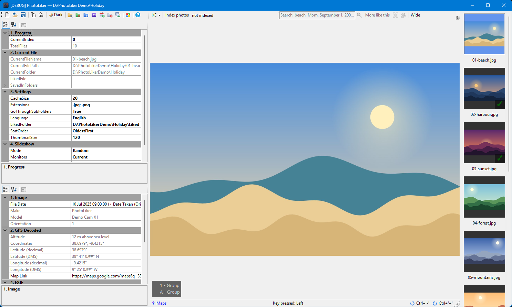
Світла тема.
28. Що зберігає PhotoLiker і де
У кожній папці з фото:photo-liker-config.json — налаштування цієї папки (тема, положення вікна, типи файлів, фото, на якому ви зупинилися), тож кожна папка
відкривається так, як ви її залишили, на будь-якому комп’ютері. Шляхи в ньому відносні, тому папку можна перенести чи передати. photo-liker-people.json містить імена, які ви дали обличчям, а photo-liker-groups.json — групи, на які ви розклали людей (копія груп цього комп’ютера, щоб вони подорожували разом
із фото; коли ви відкриваєте папку, чинною є та, що збережена пізніше).
photo-liker-book.json і photo-liker-manuscript.json зберігають роботу вікон Make a book і Scan manuscripts.
Це єдині файли, які PhotoLiker додає до вашої папки, окрім журналів Align dates і Find duplicates.
Папка Liked (за замовчуванням усередині папки з фото) і її папки груп: ваші копії.
Папка Deleted усередині папки з фото: фото, які ви прибрали, а також переміщені дублікати й фото, які не читаються.
На цьому комп’ютері, у %LocalAppData%\PhotoLiker: збережені списки папок, індекс пошуку, моделі ШІ, люди з усіх ваших папок і групи, на які ви їх розклали, остання відкрита папка, значення вікон Trace Bitmap і Video to GIF та мова програми.
Усе, окрім моделей, можна створити знову, тож видалення коштує лише часу на повторне створення.
29. Вікно «About» і цей посібник
Кнопка Help (знак питання) в кінці панелі інструментів або клавіша F1 відкриває вікно About: версія й дата збірки програми, клавіші та рухи миші (список із розділу
Клавіатура і миша) і дві кнопки, які відкривають цей посібник англійською чи українською.
Для цього вікно не обов’язкове: у головному вікні F3 відкриває англійський посібник, а F2 — український.
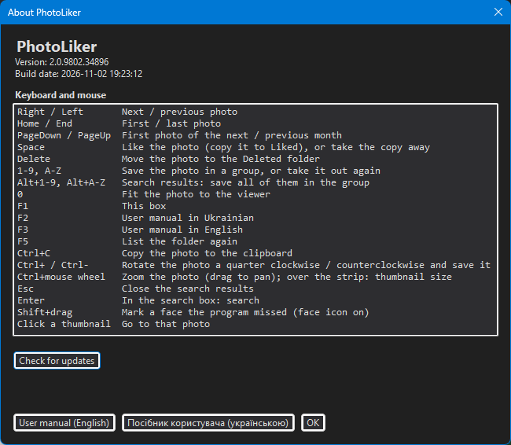
Вікно About.
Кнопка Check for updates питає GitHub, чи є новіша версія PhotoLiker, ніж ваша. Вона питає лише тоді, коли ви її натиснете: у фоновому режимі
нічого не перевіряється. Якщо новіша версія є, Install and restart робить решту просто у вікні: завантажує установник (зі смугою поступу), перевіряє його, закриває PhotoLiker,
тихо запускає установник поверх встановленої копії (видно лише його невеличке вікно поступу) і знову запускає PhotoLiker. Ваші налаштування, вподобання та індекси пошуку залишаються.
Під відповіддю з'являється список What's new (Що нового): по одному реченню про кожну нову можливість чи виправлення, для кожної версії після вашої, якщо ви пропустили кілька (речення англійською).
Release page відкриває сторінку цієї версії, де сказано, що змінилося. Копію, яку розпакували з zip або запустили з коду, установник замінити не може: він встановлює
PhotoLiker для вас як другу копію і запускає саме її, тож лише тут Install спершу питає. Копія, з якої ви почали, лишається на місці.